精准印记Accurate Mark
获得 强击光环、愈合印记、女猎手之怒 和 游侠印记。
+4s 猎人印记持续时间
◆可重复任务：对敌方英雄的普通攻击可提供 1 层，并使攻击伤害每层提高 0.4。
赢得游戏后保留 50% 任务进度。Gain Trueshot Aura, Mark of Mending, Huntress's Fury, and Ranger's Mark.
+4s Hunter's Mark Duration
◆Repeatable Quest: Basic Attacks against enemy Heroes grant 1 stack and increases Attack Damage by 0.4 per stack.
Retain 50% of Quest progress after winning the game.
不可叠加。 仅对 生效。Doesn't stack. Appears for only.
全天赋All Talents
每当达到非英雄天赋层时，获得该层所有天赋。Gain all talents in a tier whenever you reach a non-Heroic talent tier.
不可叠加。 生效英雄：。Doesn't stack. Appears for .
爱蛛者Arachnophile
获得 寡妇毒蛛、妖术蜘蛛、亚拉基尔的灵魂 和 群聚蜘蛛。
被动：每 5 秒召唤 3 只尸蛛。Gain Widowmakers, Hexed Crawlers, Spirit of Arachyr, and Spider Colony.
Passive: Summon 3 Corpse Spiders every 5 seconds.
不可叠加。 仅对 生效。Doesn't stack. Appears for only.
炮击Artillery
获得 远程炮击。
远程炮击：
+25% 溅射半径
+15% 溅射伤害
攻城模式下的普通攻击拥有全图射程。Gain Advanced Artillery.
Advanced Artillery:
+25% Splash Radius
+15% Splash Damage
Basic Attacks while in Siege Mode have global range.
不可叠加。 仅对 生效。Doesn't stack. Appears for only.
巨炮Big Guns
获得 钝头弹 和 轨道钝头弹。
钝头弹：
+2 充能次数
-60s 冷却时间
-100 法力消耗Gain Blunt Force Gun and Orbital BFG.
Blunt Force Gun:
+2 Charges
-60s Cooldown
-100 Mana Cost
不可叠加。 仅对 生效。Doesn't stack. Appears for only.

起始Starter伊利丹Illidan
燃烧之刃Burning Blades
获得 烈火烙印。
用普通攻击、俯冲或扫荡打击造成伤害会获得 1 层燃烧之刃。
2.25 秒后，燃烧之刃会迅速衰减。
+0.5% 每层燃烧之刃提供的攻击速度。
攻击速度加成上限为 +800%。
燃烧之刃每秒衰减 80 层。Gain Fiery Brand.
Dealing damage with Basic Attacks, Dive, or Sweeping Strike grants 1 stack of Burning Blades.
After 2.25 seconds, Burning Blades rapidly decays.
+0.5% Attack Speed per Burning Blades stacks.
Attack Speed Bonus caps at +800%.
Burning Blades decays 80 stacks per second.
不可叠加。 仅对 生效。Doesn't stack. Appears for only.
起始Starter失落的维京人The Lost Vikings
按键狂魔Button Masher
获得 维京贿赂、转向胜利、北境力量 和 维京跳跃。
-5s 转向胜利冷却时间
-7.5s 北境力量冷却时间
-15s 维京跳跃冷却时间
-15s 冲冲冲冷却时间Gain Viking Bribery, Spin To Win!, Norse Force, and Jump!.
-5s Spin To Win! Cooldown
-7.5s Norse Force Cooldown
-15s Jump! Cooldown
-15s Go Go Go! Cooldown
不可叠加。 仅对 生效。Doesn't stack. Appears for only.
炮台速攻Cannon Rush
+2 光子炮台充能次数
光子炮台会同时补满所有充能。
光子炮台位于水晶塔能量场范围内时，其持续时间会暂停。+2 Photon Cannon Charges
Photon Cannon replenishes all charges at the same time.
Photon Cannon's duration is paused while within a Pylon's Power Field.
不可叠加。 仅对 生效。Doesn't stack. Appears for only.
深度俯冲Deep Dive
获得 本能格挡、夺命追猎、敌我不分 和 死亡标记。
+5% 俯冲的最大生命值伤害。
俯冲获得无限射程。Gain Reflexive Block, Rapid Chase, Friend or Foe, and Marked for Death.
+5% Maximum Health Damage for Dive.
Dive gains unlimited range.
不可叠加。 仅对 生效。Doesn't stack. Appears for only.
艾露恩之矢Elune's Ranger
获得 游侠、苛烈月光、强化术 和 哨兵指挥官。
+1 哨兵充能次数
-100% 哨兵法消耗
◆可重复任务：用哨兵命中敌方英雄可获得 1 层，并使哨兵的伤害每层提高 5%。
奖励（20 层）：哨兵会穿透命中的第一个英雄。
赢得游戏后保留 25% 任务进度。Gain Ranger, Harsh Moonlight, Empower, and Commander of Sentinels.
+1 Sentinel Charge
-100% Sentinel Mana Cost
◆Repeatable Quest: Hitting enemy Heroes with Sentinel grants 1 stack and increases Sentinel's damage by 5% per stack.
Reward (20 Stacks): Sentinel pierces the first Hero hit.
Retain 25% of Quest progress after winning the game.
不可叠加。 仅对 生效。Doesn't stack. Appears for only.
霜狼之怒Frostwolf's Fury
获得 冰霜狼群、先祖之怒、霜狼之赐 和 狼魂之盾。
普通攻击提供 1 层霜狼韧性。Gain Frostwolf Pack, Ancestral Wrath, Frostwolf's Grace, and Spirit Shield.
Basic Attacks grant 1 stack of Frostwolf Resilience.
不可叠加。 仅对 生效。Doesn't stack. Appears for only.
起始Starter失落的维京人The Lost Vikings
伟大维京宝藏Great Viking Hoard
敌方英雄死亡时掉落 3 个恢复之球，敌方建筑死亡时掉落 1 个恢复之球。这些球不会变为中立。
◆可重复任务：收集恢复之球可获得 1 层。
奖励：
+0.5% 每层攻击伤害、法术强度和最大生命值。
+0.25% 每层移动速度。
+0.75% 每层冲冲冲移动速度。
赢得游戏后保留 25% 维京宝藏任务进度。Enemy Heroes drop 3 Regeneration Globes and enemy Structures drop 1 Regeneration Globe on death. These globes do not turn Neutral.
◆Repeatable Quest: Collect Regeneration Globes to grant 1 stack.
Reward:
+0.5% Attack Damage, Spell Power, and Maximum Health per stack.
+0.25% Movement Speed per stack.
+0.75% Go Go Go! Movement Speed per stack.
Retain 25% of Viking Hoard's Quest progress after winning the game.
不可叠加。 仅对 生效。Doesn't stack. Appears for only.

起始Starter穆拉丁Muradin
锤击者Hammerer
获得 完美风暴 和 无情铁锤。
+7% 风暴之锤对英雄的最大生命值伤害。
赢得游戏后保留风暴之锤任务进度的 100%。Gain Perfect Storm and Sledgehammer.
+7% Maximum Health Damage for Storm Bolt against Heroes.
Retain 100% of Storm Bolt's Quest progress after winning the game.
不可叠加。 仅对 生效。Doesn't stack. Appears for only.

起始Starter穆拉丁Muradin
跳跃者Jumper
获得 矮人格挡、猛烈撞击、矮人飞射 和 山丘之王。
+100% 矮人投掷范围与半径
矮人投掷期间变为不可阻挡。
◆可重复任务：用矮人投掷命中敌方英雄可获得 1 层，并使矮人投掷的伤害每层提高 10%。
奖励（25 层）： -4s 矮人投掷冷却时间
赢得游戏后保留 50% 任务进度。Gain Dwarf Block, Heavy Impact, Dwarf Launch, and Mountain King.
+100% Dwarf Toss Range and Radius
Become Unstoppable during Dwarf Toss.
◆Repeatable Quest: Hitting enemy Heroes with Dwarf Toss grants 1 stack and increases Dwarf Toss's damage by 10% per stack.
Reward (25 Stacks): -4s Dwarf Toss Cooldown
Retain 50% of Quest progress after winning the game.
不可叠加。 仅对 生效。Doesn't stack. Appears for only.
引雷针Lightning Rod
获得 时空利刃、元素突袭 和 元素动能。
萨尔的普通攻击变为远程，并且远程专属恩赐变为可选。
+50% 野性狼魂射程
+50% 闪电链施法距离
远程萨尔的攻击范围为 6。Gain Nexus Blades, Elemental Assault, and Elemental Momentum.
Thrall's Basic Attack becomes ranged and ranged-only Boons become available.
+50% Feral Spirit Range
+50% Chain Lightning Cast Range
Ranged Thrall has 6 Attack Range.
不可叠加。 仅对 生效。Doesn't stack. Appears for only.
机枪手Machine Gunner
坦克模式：
+1.5 攻击范围
+700% 基础攻击速度
-75% 基础攻击伤害
坦克模式下的普通攻击每秒发射 8 次。Tank Mode:
+1.5 Attack Range
+700% Base Attack Speed
-75% Base Attack Damage
Basic Attacks in Tank Mode fire 8 times per second.
不可叠加。 仅对 生效。Doesn't stack. Appears for only.
流星雨Meteor Shower
获得 月神赠礼。
每次普通攻击都会向附近一名随机敌人发射月光术，优先选择英雄。
此效果的冷却时间为 3.5 秒。
赢得游戏后保留月光术任务进度的 100%。Gain Elune's Gift.
Every Basic Attack fires a Lunar Flare at a random nearby enemy, prioritizing Heroes.
This effect has a 3.5 second cooldown.
Retain 100% of Lunar Flare's Quest progress after winning the game.
不可叠加。 仅对 生效。Doesn't stack. Appears for only.
飞弹弹幕Missile Barrage
获得 原力护甲、充能爆破、追踪飞弹、萤火虫 和 镜光魔珠。
+2s 魔法飞弹冷却时间
在初始飞弹之后，魔法飞弹会在 1 秒内发射 15 枚魔法飞弹，造成 50% 的伤害。
额外的魔法飞弹对建筑造成 25% 的伤害，且不受追踪飞弹影响。Gain Force Armor, Charged Blast, Seeker, Fireflies, and Mirrorball.
+2s Magic Missiles Cooldown
After the initial missiles, Magic Missiles fires a barage of 15 magic missiles over 1 second dealing 50% damage.
The additional magic missiles deal 25% damage to Structures and do not benefit from Seeker.
不可叠加。 仅对 生效。Doesn't stack. Appears for only.
奥术连珠Orbing
获得 三元宝珠、贼神的复仇 和 奥术星环。
奥术之球额外发射 2 枚呈弧形分布的球体。Gain Triumvirate, Zei's Vengeance, and Arcane Orbit.
Arcane Orb fires 2 additional orbs in an arc.
不可叠加。 仅对 生效。Doesn't stack. Appears for only.
绝对力量Overwhelming Power
+20% 法术强度、移动速度、攻击伤害和攻击速度。
+50% 基础技能冷却恢复速度
+10% 吸血+20% Spell Power, Movement Speed, Attack Damage, and Attack Speed.
+50% Basic Ability Cooldown Recharge Rate
+10% Lifesteal
不可叠加。 生效英雄：。Doesn't stack. Appears for .
力量仪式Power Ritual
+50% 溅射攻击伤害
普通攻击造成额外伤害，数值等同于你的巫毒祭典礼数。+50% Splash Attack Damage
Basic Attacks deal bonus damage equal to your Voodoo Ritual stacks.
不可叠加。 仅对 生效。Doesn't stack. Appears for only.
任务连连Quests Galore
获得 元素回响、毁灭闪电、漩涡武器、冰霜狼群 和 雷霆风暴。
胜利后保留这些任务 50% 的进度。Gain Echo of the Elements, Crash Lightning, Maelstrom Weapon, Frostwolf Pack, and Thunderstorm.
Retain 50% of Quest progress on these Quests after winning the game.
不可叠加。 仅对 生效。Doesn't stack. Appears for only.
自力更生Self Reliant
AI 队友：
+25 护甲
+300% 生命值与法力回复
+33% 吸血AI Teammates:
+25 Armor
+300% Health and Mana Regeneration
+33% Lifesteal
不可叠加。 生效英雄：。Doesn't stack. Appears for .
起始Starter失落的维京人The Lost Vikings
专职维京人Specialized Vikings
获得 巨人冲撞。
+40 奥拉夫护甲
-2s 奥拉夫冲锋冷却时间
+40% 巴尔洛戈攻击速度
+5.5 埃瑞克攻击范围Gain Large and In Charge.
+40 Olaf Armor
-2s Olaf Charge Cooldown
+40% Baleog Attack Speed
+5.5 Erik Attack Range
不可叠加。 仅对 生效。Doesn't stack. Appears for only.
传送者Teleporter
获得 以太行者、灾厄降临、幻术师 和 钻石体肤。
灾厄降临对非英雄单位造成 50% 的伤害。
传送：
+100% 射程
+2 充能次数Gain Aether Walker, Calamity, Illusionist, and Diamond Skin.
Calamity deals 50% damage to non-Heroes.
Teleport:
+100% Range
+2 Charges
不可叠加。 仅对 生效。Doesn't stack. Appears for only.
血海深仇True Unending Hatred
获得 时空利刃 和 无尽仇恨。
+25% 任何来源的无尽仇恨层数。
赢得游戏后保留 50% 任务进度。Gain Nexus Blades and Unending Hatred.
+25% Unending Hatred stacks from any source.
Retain 50% of Quest progress after winning the game.
不可叠加。 仅对 生效。Doesn't stack. Appears for only.
天神势不可挡Unstoppable Avatar
获得 天神下凡、无坚不摧之力、觉醒之风 和 石像形态。
天神下凡永久生效。
普通攻击造成额外伤害，数值相当于你最大生命值的 3%。Gain Avatar, Unstoppable Force, Third Wind, and Stoneform.
Avatar is always active.
Basic Attacks deal bonus damage equal to 3% of your maximum Health.
不可叠加。 仅对 生效。Doesn't stack. Appears for only.
折跃分裂Warp Split
折跃裂隙引爆后分裂为 2 个折跃裂隙，这些裂隙不会再分裂。
敌人被拉向折跃裂隙中心。Warp Rift splits into 2 Warp Rifts after detonation. These do not split further.
Enemies are pulled toward Warp Rift's center.
不可叠加。 仅对 生效。Doesn't stack. Appears for only.
折跃科技Warp Technology
获得在水晶塔附近消耗 5 晶体矿折跃狂热者、10 晶体矿折跃追猎者、30 晶体矿折跃不朽者的能力。
游戏开始时拥有 50 晶体矿。Gain the ability to warp in Zealots for 5 Minerals, Stalkers for 10 Minerals, and Immortals for 30 Minerals near Pylons.
Start the game with 50 Minerals.
不可叠加。 仅对 生效。Doesn't stack. Appears for only.
僵尸驯养者Zombie Handler
获得 亡者进军 和 剧毒之环。
僵尸不再随时间流失生命值。
被动：附近敌方小兵死亡或被你击杀时，有 50% 几率召唤一只僵尸。Gain Dead Rush and Ring of Poison.
Zombies no longer lose Health over time.
Passive: When a nearby enemy Minion dies or is killed by you, it has a 50% chance to summon a Zombie.
不可叠加。 仅对 生效。Doesn't stack. Appears for only.
灾祸Calamitous
+15% （每层 +15%） 灾厄降临伤害+15% (+15% per stack) Calamity Damage
可无限叠加。 仅对 生效。 需要 。Stacks infinitely. Appears for only. Requires .
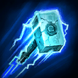
普通Common穆拉丁Muradin
廉价之锤Cheap Hammer
-25 风暴之锤法力消耗-25 Storm Bolt Mana Cost
不可叠加。 仅对 生效。Doesn't stack. Appears for only.
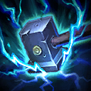
普通Common穆拉丁Muradin
拍拍手Clap Clap
+15% （每层 +15%） 雷霆一击伤害+15% (+15% per stack) Thunder Clap Damage
可无限叠加。 仅对 生效。Stacks infinitely. Appears for only.
冷冻地雷Cryo Mine
+2.5s 蜘蛛雷减速持续时间+2.5s Spider Mines Slow Duration
不可叠加。 仅对 生效。Doesn't stack. Appears for only.
致命蟾蜍Deadly Toads
+15% （每层 +15%） 蟾蜍之疫伤害+15% (+15% per stack) Plague of Toads Damage
可无限叠加。 仅对 生效。Stacks infinitely. Appears for only.
衰弱之蛛Debilitating Spiders
尸蛛：
+15% 减速
+2s 减速持续时间Corpse Spiders:
+15% Slow
+2s Slow Duration
不可叠加。 仅对 生效。 需要 。Doesn't stack. Appears for only. Requires .
毁灭Destruction
◆任务：摧毁敌方堡垒或要塞可提供 1 层。
奖励（6 层）： +1 普通恩赐
奖励（12 层）： +1 优秀恩赐
奖励（24 层）： +1 稀有恩赐
赢得游戏后保留 100% 任务进度。◆Quest: Destroying enemy Forts or Keeps grants 1 stack.
Reward (6 Stacks): +1 Common Boon
Reward (12 Stacks): +1 Uncommon Boon
Reward (24 Stacks): +1 Rare Boon
Retain 100% of Quest progress after winning the game.
不可叠加。Doesn't stack.
干扰者Disruptor
+15% （每层 +15%） 干扰脉冲伤害+15% (+15% per stack) Disruption Pulse Damage
可无限叠加。 仅对 生效。Stacks infinitely. Appears for only.
耐久护盾Durable Shields
+50 友方近战小兵的物理护甲。+50 Physical Armor for allied melee Minions.
不可叠加。Doesn't stack.
矮人冲击Dwarf Impact
+15% （每层 +15%） 矮人投掷伤害+15% (+15% per stack) Dwarf Toss Damage
可无限叠加。 仅对 生效。Stacks infinitely. Appears for only.
高效蜘蛛Efficient Spiders
-30 尸蛛法力消耗-30 Corpse Spiders Mana Cost
不可叠加。 仅对 生效。Doesn't stack. Appears for only.
电刑Electrocution
+20% 雷霆一击减速+20% Thunder Clap Slow
不可叠加。 仅对 生效。Doesn't stack. Appears for only.
艾露恩之触Elune's Reach
+50% 月神之光射程
月神之光对远处目标的治疗量提高 25%。+50% Light of Elune Range
Light of Elune heals for 25% more on distant targets.
不可叠加。 仅对 生效。Doesn't stack. Appears for only.
耐力Endurance
+8% （每层 +8%） 所有友方的最大生命值。+8% (+8% per stack) Maximum Health for all allies.
可无限叠加。Stacks infinitely.
爆炸地雷Explosive Mine
蜘蛛雷：
+15% （每层 +15%） 伤害
+5s （每层 +5s） 持续时间Spider Mines:
+15% (+15% per stack) Damage
+5s (+5s per stack) Duration
可无限叠加。 仅对 生效。Stacks infinitely. Appears for only.
爆炸裂隙Explosive Rift
+15% （每层 +15%） 折跃裂隙伤害+15% (+15% per stack) Warp Rift Damage
可无限叠加。 仅对 生效。Stacks infinitely. Appears for only.

普通Common
无影步Fast Feet
+8% （每层 +8%） 所有友方的移动速度。+8% (+8% per stack) Movement Speed for all allies.
可无限叠加。Stacks infinitely.
疾速破土Fast Uproot
-50% 僵尸之墙的施法时间与延迟。-50% Zombie Wall Cast Time and Delay.
不可叠加。 仅对 生效。Doesn't stack. Appears for only.
炮火全开Firepower
+15% （每层 +15%） 光子炮台伤害+15% (+15% per stack) Photon Cannon Damage
可无限叠加。 仅对 生效。Stacks infinitely. Appears for only.
饱饲Fodder
-50 僵尸之墙法力消耗-50 Zombie Wall Mana Cost
不可叠加。 仅对 生效。Doesn't stack. Appears for only.
拾球者Globe Collector
所有友方的恢复之球效果：
+5 （每层 +5） 收集范围
+2.5s （每层 +2.5s） 持续时间Regeneration Globe effects for all allies:
+5 (+5 per stack) Collection Range
+2.5s (+2.5s per stack) Duration
最多叠加 层。Stacks up to .
治疗法术Healing Spell
友方领队小兵每秒为附近友方小兵恢复最大生命值的 1%。Allied leader Minions heal nearby allied Minions for 1% of their maximum Health every second.
不可叠加。Doesn't stack.
饥饿僵尸Hungry Zombies
僵尸与僵尸之墙：
+15% （每层 +15%） 伤害
+25% （每层 +25%） 最大生命值Zombies and Zombie Wall:
+15% (+15% per stack) Damage
+25% (+25% per stack) Maximum Health
可无限叠加。 仅对 生效。Stacks infinitely. Appears for only.
痛苦法球Hurtful Orbs
+15% （每层 +15%） 奥术之球伤害+15% (+15% per stack) Arcane Orb Damage
可无限叠加。 仅对 生效。Stacks infinitely. Appears for only.
强化弓箭Improved Archery
友方远程小兵：
+2 攻击范围
+25% 攻击速度Allied ranged Minions:
+2 Attack Range
+25% Attack Speed
不可叠加。Doesn't stack.
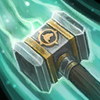
普通Common萨尔Thrall
急匆匆In a Rush
风怒：
+10% （每层 +10%） 移动速度
+0.5s （每层 +0.5s） 持续时间Windfury:
+10% (+10% per stack) Movement Speed
+0.5s (+0.5s per stack) Duration
可无限叠加。 仅对 生效。Stacks infinitely. Appears for only.
击杀契约Kill Contract
◆任务：英雄击杀参与提供 1 层。进度在轮次之间会丢失。
奖励（25 层）：
+1 普通恩赐
+1 优秀恩赐◆Quest: Hero Takedowns grant 1 stack. Progress is lost between rounds.
Reward (25 Stacks):
+1 Common Boon
+1 Uncommon Boon
不可叠加。Doesn't stack.
持久裂隙Lasting Rift
+6s 折跃裂隙持续时间+6s Warp Rift Duration
不可叠加。 仅对 生效。Doesn't stack. Appears for only.
身轻如燕Light Feet
-30 矮人投掷法力消耗-30 Dwarf Toss Mana Cost
不可叠加。 仅对 生效。Doesn't stack. Appears for only.
利刃延展Long Blades
+0.75 攻击范围+0.75 Attack Range
不可叠加。 仅对 生效。Doesn't stack. Appears for only.
麦高芬MacGuffin
-50% （每层 -25%） 所有友方的目标引导时间。-50% (-25% per stack) Objective Channel Time for all allies.
最多叠加 层。 不在 出现。Stacks up to . Does not appear on .
法力回复Mana Regenerator
+100% AI 队友的法力回复。+100% Mana Regeneration for AI Teammates.
不可叠加。Doesn't stack.
多重仪式Many Rituals
+40 （每层 +20） 巫毒祭典礼数+40 (+20 per stack) Voodoo Ritual Stacks
可无限叠加。 仅对 生效。Stacks infinitely. Appears for only.
晶矿牵引Mineral Magnet
+10 晶体矿收集范围+10 Mineral Collection Range
不可叠加。 仅对 生效。Doesn't stack. Appears for only.
和平主义Pacifism
◆任务：在不获得任何个人英雄击杀与助攻的情况下赢下一局游戏。
奖励：
+1 优秀恩赐
+1 稀有恩赐
+1 史诗恩赐◆Quest: Win a game without any personal Hero Takedowns and Assists.
Reward:
+1 Uncommon Boon
+1 Rare Boon
+1 Epic Boon
不可叠加。Doesn't stack.
刺客之路Path of the Assassin
+4 （每层 +2.0） 每级攻击伤害+4 (+2.0 per stack) Attack Damage per level.
最多叠加 层。Stacks up to .- 对 2 英雄降为：D.Va, Genji, 卢西奥, Tassadar, Tychus, 查莉娅。 对 1 英雄降为：猎空。
- 对 1 英雄降为：D.Va, Genji, 卢西奥, Tassadar, Tychus, 查莉娅。 对 1 英雄降为：猎空。
战士之路Path of the Warrior
+40 （每层 +40） 每级最大生命值。+40 (+40 per stack) Maximum Health per level.
最多叠加 层。Stacks up to .
巫师之路Path of the Wizard
+10 （每层 +10） 每级最大法力值。
+0.2 （每层 +0.2） 每级法力回复。+10 (+10 per stack) Maximum Mana per level.
+0.2 (+0.2 per stack) Mana Regeneration per level.
可无限叠加。 生效英雄：。 对 不生效。Stacks infinitely. Appears for . Does not appear for .
强力之锤Power Bolt
+15% （每层 +15%） 风暴之锤伤害+15% (+15% per stack) Storm Bolt Damage
可无限叠加。 仅对 生效。Stacks infinitely. Appears for only.
普通Common失落的维京人The Lost Vikings
三英之力Power of Three
+7.5% （每层 +7.5%） 奥拉夫最大生命值
+5% （每层 +5%） 巴尔洛戈攻击伤害与攻击速度
+7 （每层 +7） 埃瑞克攻击伤害+5% （每层 +5%） 埃瑞克移动速度+7.5% (+7.5% per stack) Olaf Maximum Health
+5% (+5% per stack) Baleog Attack Damage and Attack Speed
+7 (+7 per stack) Erik Attack Damage+5% (+5% per stack) Erik Movement Speed
可无限叠加。 仅对 生效。Stacks infinitely. Appears for only.
强力Powerful
+6% （每层 +6%） 所有友方的攻击伤害。+6% (+6% per stack) Attack Damage for all allies.
可无限叠加。Stacks infinitely.
强力飞弹Powerful Missiles
+15% （每层 +15%） 魔法飞弹伤害+15% (+15% per stack) Magic Missiles Damage
可无限叠加。 仅对 生效。Stacks infinitely. Appears for only.
强力蜘蛛Powerful Spiders
+15% （每层 +15%） 尸蛛伤害+15% (+15% per stack) Corpse Spiders Damage
可无限叠加。 仅对 生效。Stacks infinitely. Appears for only.
星灵护甲Protoss Armor
+25% （每层 +25%） 狂热者、追猎者与不朽者的最大生命值及护盾。+25% (+25% per stack) Maximum Health and Shields for Zealots, Stalkers, and Immortals.
可无限叠加。 仅对 生效。 需要 。Stacks infinitely. Appears for only. Requires .
星灵武器Protoss Weapons
+15% （每层 +15%） 狂热者、追猎者与不朽者的伤害。+15% (+15% per stack) Damage for Zealots, Stalkers, and Immortals.
可无限叠加。 仅对 生效。 需要 。Stacks infinitely. Appears for only. Requires .

普通Common
加固城墙Reinforced Walls
+20% （每层 +20%） 友方建筑的最大生命值。+20% (+20% per stack) Maximum Health for allied Structures.
可无限叠加。Stacks infinitely.
魔法之环Ring of Magic
+15% （每层 +7.5%） 友方英雄的技能恢复速度。+15% (+7.5% per stack) Ability Recharge Rate for allied Heroes.
可无限叠加。Stacks infinitely.
恢复之环Ring of Regeneration
友方英雄：
+12 （每层 +8） 生命回复
+250 （每层 +100） 最大生命值Allied Heroes:
+12 (+8 per stack) Health Regeneration
+250 (+100 per stack) Maximum Health
可无限叠加。Stacks infinitely.
恩赐仪式Ritual of Boons
◆任务：获得巫毒祭典礼数可提供 1 层。进度在轮次之间会丢失。
奖励（250 层）：
+1 优秀恩赐
+1 稀有恩赐◆Quest: Gaining Voodoo Ritual stacks grants 1 stack. Progress is lost between rounds.
Reward (250 Stacks):
+1 Uncommon Boon
+1 Rare Boon
不可叠加。 仅对 生效。Doesn't stack. Appears for only.
法术共鸣Spellcasting
+6% （每层 +6%） 所有友方的法术强度。+6% (+6% per stack) Spell Power for all allies.
可无限叠加。Stacks infinitely.
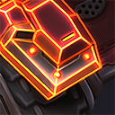
优秀Uncommon重锤军士Sgt. Hammer
先进装甲Advanced Plating
+2s 精钢装甲持续时间+2s Neosteel Plating Duration
不可叠加。 仅对 生效。Doesn't stack. Appears for only.
强化治疗Amplified Healing
+25% （每层 +15%） 受到的治疗量+25% (+15% per stack) Healing Received
可无限叠加。Stacks infinitely.
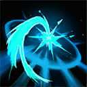
优秀Uncommon光明之翼Brightwing
奥术弹幕Arcane Barrage
+30% 奥术闪耀飞弹速度
对自己施放时，奥术闪耀会立即命中。+30% Arcane Flare Missile Speed
Arcane Flare impacts instantly when self-cast.
不可叠加。 仅对 生效。Doesn't stack. Appears for only.
备用能量Backup Power
+5s （每层 +5s） 光子炮台持续时间+5s (+5s per stack) Photon Cannon Duration
可无限叠加。 仅对 生效。Stacks infinitely. Appears for only.
赐予绝望Bestow Despair
希望恩赐可以对敌方英雄使用。Bestow Hope can be used on enemy Heroes.
不可叠加。 仅对 生效。Doesn't stack. Appears for only.
优秀Uncommon失落的维京人The Lost Vikings
大旋转Big Spin
+50% （每层 +50%） 转向胜利范围+50% (+50% per stack) Spin To Win! Range
最多叠加 层。 仅对 生效。Stacks up to . Appears for only.
皓月Big Star
+20% 月光术半径+20% Lunar Flare Radius
不可叠加。 仅对 生效。Doesn't stack. Appears for only.
黑洞Black Hole
+10% （每层 +10%） 折跃裂隙的施法距离与半径。+10% (+10% per stack) Warp Rift Cast Range and Radius.
最多叠加 层。 仅对 生效。Stacks up to . Appears for only.

优秀Uncommon
后会有期！Bye Bye!
-4.5s 所有友方的炉石引导时间。-4.5s Hearthstone Channel Time for all allies.
不可叠加。Doesn't stack.
便捷传送门Convenient Portals
在上路和下路之间创建一个永久传送门，仅限你的队伍使用。Creates a permanent Portal between the top lane and the bottom lane, only usable by your Team.
不可叠加。Doesn't stack.
攻城专家Demolitionist
+25% （每层 +25%） 所有友方英雄对建筑的伤害。+25% (+25% per stack) Damage against Structures for all allied Heroes.
可无限叠加。Stacks infinitely.
优秀Uncommon重锤军士Sgt. Hammer
疾速布雷Drilling Claws
-50% 蜘蛛雷激活时间-50% Spider Mines Arming Time
不可叠加。 仅对 生效。Doesn't stack. Appears for only.
强化瞄准Enhanced Targeting
+2 （每层 +2） 光子炮台攻击范围+2 (+2 per stack) Photon Cannon Attack Range
最多叠加 层。 仅对 生效。Stacks up to . Appears for only.
强化突袭Extended Assault
+3s 扫荡打击伤害持续时间+3s Sweeping Strike Damage Duration
不可叠加。 仅对 生效。Doesn't stack. Appears for only.
远射Farshot
+15% （每层 +15%） 魔法飞弹射程+15% (+15% per stack) Magic Missiles Range
最多叠加 层。 仅对 生效。Stacks up to . Appears for only.
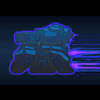
优秀Uncommon重锤军士Sgt. Hammer
燃料储备Fuel Reserves
+4s 推进器持续时间+4s Thrusters Duration
不可叠加。 仅对 生效。Doesn't stack. Appears for only.
能量聚集Gathering Power
+15% （每层 +15%） 法术强度+15% (+15% per stack) Spell Power
可无限叠加。Stacks infinitely.
丰沛霜狼Healthy Frostwolf
+25% （每层 +25%） 霜狼韧性治疗量+25% (+25% per stack) Frostwolf Resilience Healing
最多叠加 层。 仅对 生效。Stacks up to . Appears for only.
重锤Heavy Hammer
+0.25s 风暴之锤眩晕持续时间+0.25s Storm Bolt Stun Duration
不可叠加。 仅对 生效。Doesn't stack. Appears for only.
蟾蜍罐Jar of Frogs
+2 蟾蜍之疫充能次数+2 Plague of Toads Charges
不可叠加。 仅对 生效。Doesn't stack. Appears for only.
优秀Uncommon失落的维京人The Lost Vikings
出发！Let's Go!
+3s （每层 +3s） 冲冲冲持续时间+3s (+3s per stack) Go Go Go! Duration
最多叠加 层。 仅对 生效。Stacks up to . Appears for only.
加长脉冲Long Pulse
+15% （每层 +15%） 干扰脉冲射程+15% (+15% per stack) Disruption Pulse Range
最多叠加 层。 仅对 生效。Stacks up to . Appears for only.
远射追猎者Long Range Disruptors
+2 追猎者攻击范围+2 Stalker Attack Range
不可叠加。 仅对 生效。 需要 。Doesn't stack. Appears for only. Requires .
僵尸成群Many Zombies
-4s 僵尸之墙冷却时间-4s Zombie Wall Cooldown
不可叠加。 仅对 生效。Doesn't stack. Appears for only.
佣兵统领Mercenary Lord
友方雇佣兵：
+25% （每层 +25%） 最大生命值
+50% （每层 +50%） 伤害Allied Mercenaries:
+25% (+25% per stack) Maximum Health
+50% (+50% per stack) Damage
可无限叠加。Stacks infinitely.
爪牙克星Minion Killer
+25% （每层 +25%） 所有友方英雄对小兵、雇佣兵、怪物和召唤物的伤害。+25% (+25% per stack) Damage against Minions, Mercenaries, Monsters, Summons for all allied Heroes.
可无限叠加。Stacks infinitely.
时空狂暴Nexus Frenzy
+15% （每层 +7%） 攻击速度+15% (+7% per stack) Attack Speed
可无限叠加。Stacks infinitely.
时空射程Nexus Range
+1.1 （每层 +0.5） 攻击范围+1.1 (+0.5 per stack) Attack Range
可无限叠加。 生效英雄：。 对 不生效。Stacks infinitely. Appears for . Does not appear for .
敏捷蛛腿Nimble Legs
+25% 尸蛛移动速度+25% Corpse Spiders Movement Speed
不可叠加。 仅对 生效。Doesn't stack. Appears for only.
优化弹药Optimized Ordnance
+25% 光子炮台攻击速度+25% Photon Cannon Attack Speed
不可叠加。 仅对 生效。Doesn't stack. Appears for only.
群枭Owling
-3s （每层 +3s） 哨兵冷却时间-3s (+3s per stack) Sentinel Cooldown
最多叠加 层。 仅对 生效。Stacks up to . Appears for only.
野性压制Pinned Down
+0.25s 野性狼魂定身持续时间+0.25s Feral Spirit Root Duration
最多叠加 层。 仅对 生效。Stacks up to . Appears for only.

优秀Uncommon
快速坐骑Quick Mount
+40% 所有友方的坐骑速度。+40% Mount Speed for all allies.
不可叠加。Doesn't stack.
优秀Uncommon阿莱克丝塔萨Alexstrasza
快速变形Quick Transformation
红龙女王：
-130s 初始冷却时间
-0.75s 施法时间Dragonqueen:
-130s Starting Cooldown
-0.75s Cast Time
不可叠加。 仅对 生效。Doesn't stack. Appears for only.
迅捷追猎者Rapid Disruptors
+25% 追猎者攻击速度+25% Stalker Attack Speed
不可叠加。 仅对 生效。 需要 。Doesn't stack. Appears for only. Requires .
强化动力装甲Reinforced Power Suit
+50 狂热者物理护甲+50 Zealot Physical Armor
不可叠加。 仅对 生效。 需要 。Doesn't stack. Appears for only. Requires .
优秀Uncommon重锤军士Sgt. Hammer
修复蜘蛛雷Repair Mines
+75% 蜘蛛雷吸血+75% Spider Mines Lifesteal
不可叠加。 仅对 生效。Doesn't stack. Appears for only.
灼热攻击Searing Attacks
+20% （每层 +15%） 攻击伤害20% (+15% per stack) Attack Damage
可无限叠加。Stacks infinitely.
窒息之藤Strangling Vines
纠缠根须会影响非英雄敌人。Entangling Roots affects non-Heroic enemies.
不可叠加。 仅对 生效。Doesn't stack. Appears for only.
炫目之光Stunning Light
+0.25s 月光术眩晕持续时间+0.25s Lunar Flare Stun Duration
不可叠加。 仅对 生效。Doesn't stack. Appears for only.
优越Superiority
+30 （每层 +15） 所有友方英雄对非英雄单位的护甲。+30 (+15 per stack) Armor against non-Heroes for all allied Heroes.
最多叠加 层。Stacks up to .
涡轮Turbo
获得 涡轮增压。
探机冲刺：
+10% （每层 +10%） 移动速度
+1s （每层 +1s） 持续时间Gain Turbo Charged.
Worker Rush:
+10% (+10% per stack) Movement Speed
+1s (+1s per stack) Duration
可无限叠加。 仅对 生效。Stacks infinitely. Appears for only.
意外审判Unexpected Inquisition
血色审讯可以对非英雄敌人使用。
格外开恩可以对友方小兵、雇佣兵和召唤物使用。
格外开恩和血色审讯不再共享冷却时间。Inquisition can be used on non-Heroic enemies.
Clemency can be used on allied Minions, Mercenaries, and Summons.
Clemency and Inquisition no longer share a cooldown.
不可叠加。 仅对 生效。Doesn't stack. Appears for only.
优秀Uncommon失落的维京人The Lost Vikings
维京护盾Viking Barrier
北境力量会提供相当于维京人最大生命值 10% 至 30% 的护盾，存活的维京人越多效果越强。
+2s 北境力量持续时间Norse Force grants a Shield equal to 10% to 30% of the Viking's maximum Health, increasing in strength for each Viking alive.
+2s Norse Force Duration
不可叠加。 仅对 生效。Doesn't stack. Appears for only.
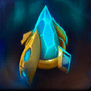
优秀Uncommon普罗比斯Probius
折跃导体Warp Conduit
-4s （每层 +4s） 水晶塔折跃冷却时间-4s (+4s per stack) Warp in Pylon Cooldown
最多叠加 层。 仅对 生效。Stacks up to . Appears for only.
加宽脉冲Wide Pulse
+50% 干扰脉冲宽度+50% Disruption Pulse Width
不可叠加。 仅对 生效。Doesn't stack. Appears for only.
活性病原体Active Pathogen
医疗病原体可以对友方小兵、雇佣兵和召唤物使用，并会向他们传播。Healing Pathogen can be used on and spreads to allied Minions, Mercenaries, and Summons.
不可叠加。 仅对 生效。Doesn't stack. Appears for only.
先祖之触Ancestral Reach
+3 治疗链对非英雄单位的弹跳次数。
治疗链可以对友方雇佣兵使用，并会弹跳至友方雇佣兵。+3 Chain Heal Bounces on non-Heroes.
Chain Heal can be used on and bounces to allied Mercenaries.
不可叠加。 仅对 生效。Doesn't stack. Appears for only.
自动矿骡Auto MULE
自动在随机受损友方建筑附近空投矿骡，每秒修复该建筑最大生命值的 10%。
该效果有 60 （每层 -20秒） 秒冷却时间。Automatically drop down a MULE near a random damaged allied Structure that repairs 10% of the Structure's maximum Health per second.
This effect has a cooldown of 60 (-20s per stack) seconds.
最多叠加 层。Stacks up to .
重低音Beat Drop
获得 立体音箱。
+4 最大立体音箱数量
多个立体音箱的效果不会叠加。Gain Boombox.
+4 Maximum Boombox
Multiple Boombox's effects do not stack.
不可叠加。 仅对 生效。Doesn't stack. Appears for only.
爆破者Blaster
震荡炮击：
+1 充能次数
+50% 伤害Concussive Blast:
+1 Charge
+50% Damage
不可叠加。 仅对 生效。Doesn't stack. Appears for only.

稀有Rare萨尔Thrall
轻风Breeze
风怒：
-3s 冷却时间
-20 法力消耗Windfury:
-3s Cooldown
-20 Mana Cost
不可叠加。 仅对 生效。Doesn't stack. Appears for only.
贿赂Bribery
每 300 （每层 -60秒） 秒自动贿赂一个中立雇佣兵营地为己方。以此方式占领的营地重生速度加快 50%。不对首领生效。Automatically bribe a neutral Mercenary camp to your side every 300 (-60s per stack) seconds. Camps taken this way respawn 50% faster. Does not work on Bosses.
最多叠加 层。Stacks up to .
伙伴BUDDY
一个友好的无人机跟随你，每 3 （每层 -0.25秒） 秒治疗 154 点生命值。
伙伴每 4 （每层 -1秒） 秒向最近的敌人发射导弹，造成 142 点范围伤害。A friendly Drone follows you around, healing for 154 Health every 3 (-0.25s per stack) seconds.
BUDDY shoots a missile every 4 (-1s per stack) seconds at the nearest enemy, dealing 142 damage in the area.
最多叠加 层。Stacks up to .
灼热圣光Burning Light
圣光术和圣光闪现可以对敌人使用。圣光术对敌人造成 362 点伤害，圣光闪现对敌人造成 230 点伤害。Holy Light and Flash of Light can be used on enemies. Holy Light deals 362 damage to enemies and Flash of Heal deals 230 damage to enemies.
不可叠加。 仅对 生效。Doesn't stack. Appears for only.
平静祈求Calm Plea
绝望祈求可以对友方小兵、雇佣兵和召唤物使用。
+52s 对非英雄目标施加的 狂热 持续时间
-3s 对非英雄目标使用绝望祈求时的 绝望 持续时间
对非英雄目标使用绝望祈求会返还 30 点法力。Desperate Plea can be used on allied Minions, Mercenaries, and Summons.
+52s Zeal Duration on non-Heroic targets.
-3s Desperation Duration when Desperate Plea is used on non-Heroic targets.
Using Desperate Plea on a non-Heroic target refunds 30 Mana.
不可叠加。 仅对 生效。Doesn't stack. Appears for only.
电容器Capacitor
+10 （每层 +10） 最大能量+10 (+10 per stack) Maximum Energy
可无限叠加。 仅对 生效。Stacks infinitely. Appears for only.
细胞反应堆Cellular Reactor
获得 细胞反应堆。
+20 （每层 +20） 最大能量
+1 （每层 +1） 能量回复
只有停止引导治疗射线 2 秒后，能量回复才会生效。Gain Cellular Reactor.
+20 (+20 per stack) Maximum Energy
+1 (+1 per stack) Energy Regeneration
Energy Regeneration only applies after not channeling Healing Beam for 2 seconds.
可无限叠加。 仅对 生效。Stacks infinitely. Appears for only.
地狱犬地雷Cerberus Mine
+50% 蜘蛛雷触发与爆炸范围+50% Spider Mines Trigger and Explosion Range
不可叠加。 仅对 生效。Doesn't stack. Appears for only.
轻蔑之环Circle of Scorn
回天息会治疗友方小兵、雇佣兵和召唤物，并对敌人造成 295 点伤害。
该伤害受天音袅绕和回天狂热影响。Breath of Heaven heals allied Minions, Mercenaries, and Summons, and deals 295 damage to enemies.
Damage is affected by Echo of Heaven and Heavenly Zeal.
不可叠加。 仅对 生效。Doesn't stack. Appears for only.
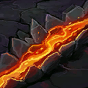
稀有Rare萨尔Thrall
粉碎裂地Crushing Sunder
获得 灭世者。
+1.5s 裂地术眩晕持续时间Gain Worldbreaker.
+1.5s Sundering Stun Duration
不可叠加。 仅对 生效。Doesn't stack. Appears for only.
猩红诅咒Curse of the Red
获得 红龙祝福。
-20s 红龙祝福冷却时间
对敌方英雄使用红龙祝福时，会永久降低其 500 点最大生命值。Gain Blessing of the Red.
-20s Blessing of the Red Cooldown
Using Blessing of the Red on an enemy Hero permanently reduces their maximum Health by 500.
不可叠加。 仅对 生效。Doesn't stack. Appears for only.
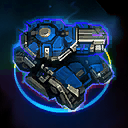
稀有Rare重锤军士Sgt. Hammer
衰弱弹Debilitating Rounds
坦克模式下普通攻击造成 1% 减速，持续 4 秒，最多 50%。While in Tank Mode, Basic Attacks Slow by 1% for 4 seconds, up to 50%.
不可叠加。 仅对 生效。 需要 。Doesn't stack. Appears for only. Requires .
深泉圣涌Deep Well
获得 光明之泉。
光明之泉会周期性地对附近敌人造成 50 点伤害，每次造成伤害都会使其冷却时间缩短 1 秒。
光明之泉只有在治疗或造成伤害 150 次后、或被重新施放时才会消失，并且会治疗友方小兵、雇佣兵和召唤物。
光明之泉每隔 0.875 秒才能对同一敌人生效一次。Gain Lightwell.
Lightwell periodically deals 50 damage to nearby enemies and its cooldown is reduced by 1 second each time Lightwell deals damage.
Lightwell only fades after healing or dealing damage 150 times or when recast and heals allied Minions, Mercenaries, and Summons.
Lightwell cannot target the same enemy more than once every 0.875 seconds.
不可叠加。 仅对 生效。Doesn't stack. Appears for only.
巨龙耐力Dragon Stamina
+25 （每层 +25） 最大能量+25 (+25 per stack) Maximum Energy
可无限叠加。 仅对 生效。Stacks infinitely. Appears for only.
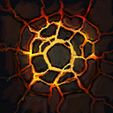
稀有Rare萨尔Thrall
碎地者Earth Shatterer
-50s 地震术冷却时间
地震术获得无限射程。-50s Earthquake Cooldown
Earthquake gains unlimited range.
不可叠加。 仅对 生效。Doesn't stack. Appears for only.
高效形态Efficient Morph
恶魔变形：
+100% 最大生命值加成
-40s 冷却时间Metamorphosis:
+100% Maximum Health Bonus
-40s Cooldown
不可叠加。 仅对 生效。Doesn't stack. Appears for only.
衰弱Enervate
激活可以对敌方英雄使用，使其沉默 3 秒并偷取 20% 的最大法力值，同时造成等量伤害。
无法对不使用法力值的英雄使用。Innervate can be used on enemy Heroes to Silence for 3 seconds and steal 20% of maximum Mana, dealing damage for the same amount.
Cannot be used on Heroes that do not use Mana.
不可叠加。 仅对 生效。Doesn't stack. Appears for only.
扩容弹匣Extended Magazine
+10 （每层 +10） 最大弹药+10 (+10 per stack) Maximum Ammo
可无限叠加。 仅对 生效。Stacks infinitely. Appears for only.
快拳Fast Puncher
野蛮斗殴：
+1 充能次数
-20s 冷却时间Haymaker:
+1 Charge
-20s Cooldown
不可叠加。 仅对 生效。Doesn't stack. Appears for only.
生命涌流First Aid
+25% （每层 +25%） 最大生命值
+1% （每层 +0.5%） 最大生命值回复+25% (+25% per stack) Maximum Health
+1% (+0.5% per stack) Maximum Health Regeneration
可无限叠加。Stacks infinitely.
巨人克星Giant Killer
+2% （每层 +1%） 普通攻击对英雄造成的最大生命值伤害。+2% (+1% per stack) Maximum Health Damage from Basic Attacks against Heroes.
可无限叠加。 生效英雄：。Stacks infinitely. Appears for .
球痴Globe Huffer
每 12 （每层 -4秒） 秒在随机友方英雄附近生成一个恢复之球，你被选中的概率翻倍。
被动：蓝色恢复之球变为中立的时间延长 100%。Spawns a Regeneration Globe near a random allied Hero every 12 (-4s per stack) seconds, with you twice as likely to be chosen.
Passive: Blue Regeneration Globes take 100% longer to turn Neutral.
最多叠加 层。Stacks up to .
变形雕文Glyph of Crittermorph
对非英雄敌人使用时，变形术会返还 50 点法力，并持续 60 秒。Polymorph refunds 50 Mana and lasts for 60 seconds when used on non-Heroic enemies.
不可叠加。 仅对 生效。Doesn't stack. Appears for only.
好酒，坏酒Good Brew, Bad Brew
治愈佳酿会额外投出 2 瓶药水：一瓶治疗友方小兵、雇佣兵和召唤物，另一瓶对敌人造成 210 点伤害。
该伤害受千年老酒和捡我影响。Healing Brew throws 2 additional brews, one to heal allied Minions, Mercenaries, and Summons, and the other to deal 210 damage to enemies.
Damage is affected by The Good Stuff and Pick Me Up.
不可叠加。 仅对 生效。Doesn't stack. Appears for only.
强力治疗图腾Greater Healing Totem
获得 治疗图腾。
治疗图腾：
+20s 持续时间
+700% 最大生命值
治疗图腾会对敌人造成相当于其最大生命值 2% 的伤害，并治疗友方小兵、雇佣兵和召唤物。Gain Healing Totem.
Healing Totem:
+20s Duration
+700% Maximum Health
Healing Totem deals damage equal to 2% of maximum Health to enemies and heals allied Minions, Mercenaries, and Summons.
不可叠加。 仅对 生效。Doesn't stack. Appears for only.
强化相位变换Greater Phase Shift
-30s 相位变换冷却时间
相位变换可以对友方小兵、雇佣兵和召唤物使用。
相位变换可以对敌人使用，造成相当于其最大生命值 25% 的伤害。
超级变换会提高相位变换的伤害。-30s Phase Shift Cooldown
Phase Shift can be used on allied Minions, Mercenaries, and Summons.
Phase Shift can be used on enemies to deal damage equal to 25% of their maximum Health.
Hyper Shift increases Phase Shift's damage.
不可叠加。 仅对 生效。Doesn't stack. Appears for only.
强力冲击Hard Impact
俯冲使敌人昏迷 0.25 秒。Dive Stuns enemies for 0.25 seconds.
不可叠加。 仅对 生效。Doesn't stack. Appears for only.
刚毅护盾Hardened Shield
不朽者仍有护盾时，超过 45 点的伤害会被降低至 45 点。
不影响法术伤害。While the Immortal has Shields remaining, incoming damage that would deal more than 45 damage have the damage reduced to 45.
Does not affect Spell Damage.
不可叠加。 仅对 生效。 需要 。Doesn't stack. Appears for only. Requires .
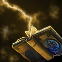
稀有Rare乌瑟尔Uther
神圣震击Holy Shock
获得 神圣震击。
神圣震击的伤害提高至 362，且不再与圣光术共享冷却时间。Gain Holy Shock.
Increases Holy Shock's damage to 362 and it no longer shares a cooldown with Holy Light.
不可叠加。 仅对 生效。Doesn't stack. Appears for only.
强化御法者Improved Archon
获得 时光涌动。
瓦解射线：
-19.5s 冷却时间
-100% 法力消耗Gain Temporal Flux.
Disintegrate:
-19.5s Cooldown
-100% Mana Cost
不可叠加。 仅对 生效。Doesn't stack. Appears for only.
凯达林升级Khaydarin Upgrade
+100% 光子炮台溅射伤害+100% Photon Cannon Splash Damage
不可叠加。 仅对 生效。Doesn't stack. Appears for only.
击倒Knock Out
+1s 麻醉镖持续时间
被麻醉镖命中的敌人受到伤害后，在 2 秒内不会被唤醒。+1s Sleep Dart Duration
Enemies cannot be woken up from Sleep Dart with damage for 2 seconds.
不可叠加。 仅对 生效。Doesn't stack. Appears for only.
大份佳酿Large Brew
+25 （每层 +25） 最大酒量+25 (+25 per stack) Maximum Brew
可无限叠加。 仅对 生效。Stacks infinitely. Appears for only.
持久毒素Lasting Poison
+2s 剧毒之环持续时间+2s Ring of Poison Duration
不可叠加。 仅对 生效。 需要 。Doesn't stack. Appears for only. Requires .
轻型坦克Light Tank
坦克模式：
+1.5 攻击范围
+20% 移动速度
坦克模式下的移动速度不会低于 120%。Tank Mode:
+1.5 Attack Range
+20% Movement Speed
Movement Speed cannot be reduced below 120% in Tank Mode.
不可叠加。 仅对 生效。 需要 。Doesn't stack. Appears for only. Requires .
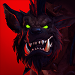
稀有Rare霍格Hogger
狂怒Mad
+20 （每层 +20） 最大怒气+20 (+20 per stack) Maximum Rage
可无限叠加。 仅对 生效。Stacks infinitely. Appears for only.
马拉松Marathon
获得 急切的冒险者、安全冲刺 和 出入无形。
+2.5s 无影步持续时间Gain Eager Adventurer, Safety Sprint, and Shake It Off.
+2.5s Fast Feet Duration
不可叠加。 仅对 生效。Doesn't stack. Appears for only.
玄秘盟友Mystic Ally
凌风击会在原地留下一个灵相幻身、土相幻身或风相幻身。
相同的盟友效果不会叠加。Radiant Dash leaves behind either a Spirit Ally, an Earth Ally, or an Air Ally.
Identical Ally effects do not stack.
不可叠加。 仅对 生效。Doesn't stack. Appears for only.
操控增效Operational Efficiency
-50% 所有技能的法力消耗。-50% Mana Cost on all Abilities.
不可叠加。 仅对 生效。Doesn't stack. Appears for only.
满溢之光Overflowing Light
月神之光可以对友方小兵、雇佣兵和召唤物使用。
选择月光后，治疗也会以范围形式生效。Light of Elune can be used on allied Minions, Mercenaries, and Summons.
Healing also applies in an area when Moonlight is picked.
不可叠加。 仅对 生效。Doesn't stack. Appears for only.
被动收入Passive Income
每 8 秒获得 1 （每层 +1） 个晶体矿。Gain 1 (+1 per stack) Mineral every 8 seconds.
最多叠加 层。 仅对 生效。 需要 。Stacks up to . Appears for only. Requires .
斗士之路Path of the Fighter
刺客之路、战士之路和巫师之路视为等级提高 4 级。
刺客之路和战士之路会作用于 AI 队友。Path of the Assassin, Path of the Warrior, and Path of the Wizard count as being 4 levels higher.
Path of the Assassin and Path of the Warrior apply to AI Teammates.
不可叠加。 需要 。Doesn't stack. Requires .
动感节奏Pop Track
切歌和强音会作用于友方小兵、雇佣兵和召唤物。Crossfade and Amp It Up apply to allied Minions, Mercenaries, and Summons.
不可叠加。 仅对 生效。Doesn't stack. Appears for only.
剧毒药水Potion of Poison
治疗药水对敌人造成 285 点伤害。
次级治疗药水对敌人造成 250 点伤害。
该伤害受复苏药水、超级治疗药水、究极治疗药水和振奋药水影响。Healing Potions deal 285 damage to enemies.
Lesser Healing Potions deal 250 damage to enemies.
Damage is affected by Rejuvenation Potion, Super Healing Potion, Mega Healing Potion, and Potion of Revival.
不可叠加。 仅对 生效。Doesn't stack. Appears for only.
卖药人Potion Seller
获得 振奋药水。
治疗药水和次级治疗药水会治疗友方小兵、雇佣兵和召唤物。Gain Potion of Revival.
Healing Potions and Lesser Healing Potions heal allied Minions, Mercenaries, and Summons.
不可叠加。 仅对 生效。Doesn't stack. Appears for only.
死亡祈祷Prayer of Death
获得 绝望祷言。
绝望祷言：
-15s 冷却时间
-1s 跪地持续时间
对敌人使用绝望祷言时造成 375 点伤害。Gain Desperate Prayer.
Desperate Prayer:
-15s Cooldown
-1s Kneel Duration
Desperate Prayer deals 375 damage when used on enemies.
不可叠加。 仅对 生效。Doesn't stack. Appears for only.
精准熔岩打击Precision Lava Strike
获得 高级熔岩打击。
凝固汽油弹打击获得无限射程。Gain Advanced Lava Strike.
Napalm Strike gains unlimited range.
不可叠加。 仅对 生效。Doesn't stack. Appears for only.
私人医疗运输机Private Medivac
死亡后重生时，一架医疗运输机会抵达风暴大厅并停留 10 秒。
你进入医疗运输机后，它会立即飞往你上次死亡的位置。
此效果的冷却时间为 60 秒。A Medivac arrives in the Hall of Storms and remains there for 10 seconds when you respawn after death.
Immediately departs after you enter the Medivac to your last death location.
This effect has a cooldown of 60 seconds.
不可叠加。Doesn't stack.

稀有Rare
晋升Promote
友方小兵：
+15% （每层 +15%） 最大生命值
+50% （每层 +25%） 对非英雄单位的伤害。
-25% 受到非英雄单位的伤害。 Allied Minions:
+15% (+15% per stack) Maximum Health
+50% (+25% per stack) Damage against non-Heroes.
-25% Damage Taken from non-Heroes.
可无限叠加。Stacks infinitely.
水晶塔扩容Pylon Expansion
+1 （每层 +1） 最大水晶塔数量+1 (+1 per stack) Maximum Pylons
可无限叠加。 仅对 生效。Stacks infinitely. Appears for only.
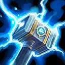
稀有Rare萨尔Thrall
快速闪电Quick Lightning
-2s 闪电链冷却时间-2s Chain Lightning Cooldown
不可叠加。 仅对 生效。Doesn't stack. Appears for only.
快速恐吓Quick Scare
饕餮恶灵：
+2s 持续时间
+15% 移动速度Ravenous Spirit:
+2s Duration
+15% Movement Speed
不可叠加。 仅对 生效。Doesn't stack. Appears for only.
稀有Rare失落的维京人The Lost Vikings
诸神黄昏突袭Ragnarok's Raid
获得 毁天灭地。
-2s 迫击炮冷却时间Gain Ragnarok 'n' Roll.
-2s Mortar Cooldown
不可叠加。 仅对 生效。Doesn't stack. Appears for only.
急速射击Rapid Fire
-3s 光子炮台达到最大攻击速度加成所需的延迟。-3s Delay for Photon Cannons to reach full Attack Speed bonus.
不可叠加。 仅对 生效。Doesn't stack. Appears for only.
急速飞弹Rapid Missiles
-1s 魔法飞弹冷却时间-1s Magic Missiles Cooldown
不可叠加。 仅对 生效。Doesn't stack. Appears for only.
稀有Rare失落的维京人The Lost Vikings
重来Replay
-50s 复活再战冷却时间-50s Play Again! Cooldown
不可叠加。 仅对 生效。Doesn't stack. Appears for only.
揭露之触Revealing Touch
普通攻击揭示目标周围小片区域，持续 3 秒。Basic Attacks reveal a small area around the target for 3 seconds.
不可叠加。Doesn't stack.
悲悯Scattered Blows
获得 升腾。
升腾除了治疗友方英雄外，还会治疗附近生命值最低的友方小兵、雇佣兵或召唤物，并对附近生命值最低的敌人造成 104 点伤害。Gain Transcendence.
Transcendence heals the lowest Health nearby allied Minion, Mercenary, or Summon, and deals 104 damage to the lowest Health nearby enemy in addition to healing allied Heroes.
不可叠加。 仅对 生效。Doesn't stack. Appears for only.
废料场Scrap Yard
+4 （每层 +4） 最大碎片+4 (+4 per stack) Maximum Scrap
可无限叠加。 仅对 生效。Stacks infinitely. Appears for only.
灼痛鞭笞Searing Lash
+100% 任何来源的灼痛鞭笞层数
赢得游戏后，保留灼痛鞭笞任务进度的 25%。+100% Searing Lash stacks from any source.
Retain 25% of Searing Lash's Quest progress after winning the game.
不可叠加。 仅对 生效。Doesn't stack. Appears for only.
灼热之光Searing Light
获得 灼热之光。
天堂之光会对非英雄单位造成伤害，并治疗友方小兵、雇佣兵和召唤物。Gain Searing Light.
Ray of Heaven deals damage to non-Heroes and heals allied Minions, Mercenaries, and Summons.
不可叠加。 仅对 生效。Doesn't stack. Appears for only.
碎甲弹Shredder Rounds
坦克模式下普通攻击使物理护甲降低 1，持续 4 秒，最多叠加 50。While in Tank Mode, Basic Attacks reduce Physical Armor by 1 for 4 seconds, stacking up to 50.
不可叠加。 仅对 生效。 需要 。Doesn't stack. Appears for only. Requires .
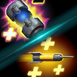
稀有Rare安娜Ana
小剂量Small Dosage
治疗镖和生物手雷会治疗友方小兵、雇佣兵和召唤物。
观瞄视界激活期间，治疗镖会穿透所有非英雄单位。Healing Dart and Biotic Grenade heal allied Minions, Mercenaries, and Summons.
Healing Dart pierces all non-Heroes while Aim Down Sights is active.
不可叠加。 仅对 生效。Doesn't stack. Appears for only.
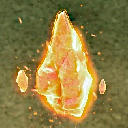
稀有Rare普罗比斯Probius
日能驱动Solarite Powered
+400 最大法力值
+25 在水晶塔能量场外时的法力回复。+400 Maximum Mana
+25 Mana Regeneration while outside a Pylon's Power Field.
不可叠加。 仅对 生效。Doesn't stack. Appears for only.
桑娅之怒Sonya's Fury
+25 （每层 +25） 最大怒气+25 (+25 per stack) Maximum Fury
可无限叠加。 仅对 生效。Stacks infinitely. Appears for only.
蜘蛛群Spider Swarm
+1 （每层 +1） 召唤的尸蛛+1 (+1 per stack) Summoned Corpse Spiders
最多叠加 层。 仅对 生效。Stacks up to . Appears for only.
稳定医疗包Stabilizer Medpacks
对非英雄单位使用时，-6 治疗射线能量消耗。
治疗射线可以对友方雇佣兵和召唤物使用。-6 Healing Beam Energy Cost when used on non-Heroes.
Healing Beam can be used on allied Mercenaries and Summons.
不可叠加。 仅对 生效。Doesn't stack. Appears for only.
星陨Star Rain
-40s 星辰坠落冷却时间
星辰坠落获得无限射程。-40s Starfall Cooldown
Starfall gains unlimited range.
不可叠加。 仅对 生效。Doesn't stack. Appears for only.
突袭狩猎Surprise Hunt
恶魔追击：
+1s 持续时间
-30s 冷却时间The Hunt:
+1s Duration
-30s Cooldown
不可叠加。 仅对 生效。Doesn't stack. Appears for only.
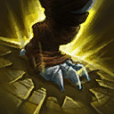
稀有Rare纳兹波Nazeebo
发脾气Tantrum
僵尸巨兽：
-3s 践踏冷却时间
+25% 践踏伤害Gargantuan:
-3s Stomp Cooldown
+25% Stomp Damage
不可叠加。 仅对 生效。Doesn't stack. Appears for only.
特洛伊蜘蛛雷Trojan Mines
坦克模式下每 8 次对同一敌人的普通攻击召唤一枚蜘蛛雷。While in Tank Mode, every 8th Basic Attack against the same enemy summons a Spider Mine.
不可叠加。 仅对 生效。 需要 。Doesn't stack. Appears for only. Requires .
猛烈撞击Very Heavy Impact
矮人投掷使敌人昏迷 0.75 秒。Dwarf Toss Stuns enemies for 0.75 seconds.
不可叠加。 仅对 生效。Doesn't stack. Appears for only.
精力Vigor
获得 精力。
+25 （每层 +25） 最大能量Gain Vigor.
+25 (+25 per stack) Maximum Energy
可无限叠加。 仅对 生效。Stacks infinitely. Appears for only.
死亡之波Wave of Doom
获得 反斥。
原力之波使敌方英雄的法术护甲降低 50 点，持续 0.5 秒。Gain Repulsion.
Wave of Force reduces the Spell Armor of enemy Heroes by 50 for 0.5 seconds.
不可叠加。 仅对 生效。Doesn't stack. Appears for only.
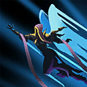
稀有Rare奥莉尔Auriel
希望之翼Wings of Hope
获得 天使飞行。
天使飞行：
-20s 冷却时间
-1s 施法时间
天使飞行获得无限射程。Gain Angelic Flight.
Angelic Flight:
-20s Cooldown
-1s Cast Time
Angelic Flight gains unlimited range.
不可叠加。 仅对 生效。Doesn't stack. Appears for only.
过来吧你Yoink!
-30s 信仰飞跃冷却时间
信仰飞跃可以对非建筑敌人使用。-30s Leap of Faith Cooldown
Leap of Faith can be used on non-Structure enemies.
不可叠加。 仅对 生效。Doesn't stack. Appears for only.
奥术循环Arcane Loop
使用基础技能会使其他基础技能的冷却时间减少 0.75 秒。Using a Basic Ability reduces the cooldown of your other Basic Abilities by 0.75 seconds.
不可叠加。 仅对 生效。Doesn't stack. Appears for only.
正义怒焰Ardent Zeal
拥有 狂热 的友方会获得治疗，治疗量相当于怀特迈恩对非英雄单位造成伤害的 25%。Allies with Zeal are healed for 25% of the damage Whitemane deals to non-Heroes.
不可叠加。 仅对 生效。Doesn't stack. Appears for only.
睡前故事Bed Time Story
获得 英雄请留步 和 尊敬长者。
英雄请留步：
+25% 射程
+8s 引导结束后的睡眠持续时间
英雄请留步也会影响非英雄、非建筑敌人。
小兵造成的伤害不会唤醒小兵和雇佣兵。Gain Stay Awhile and Listen and Respect the Elderly.
Stay Awhile and Listen:
+25% Range
+8s Sleep Duration after the Channel.
Stay Awhile and Listen also affects non-Heroic, non-Structure enemies.
Minion damage does not wake up Minions and Mercenaries.
不可叠加。 仅对 生效。Doesn't stack. Appears for only.
好战角斗士Belligerent Gladiator
+2s 角斗士勋章持续时间+2s Gladiator's Medallion Duration
不可叠加。 需要 。Doesn't stack. Requires .
史诗Epic失落的维京人The Lost Vikings
战斗陀螺Beyblade
冷却时间：30 秒
激活后持续释放「转向胜利」，在 4 秒内造成 50% 的伤害。Cooldown: 30 seconds
Activate to continuously cast Spin to Win! that deals 50% damage for 4 seconds.
不可叠加。 仅对 生效。Doesn't stack. Appears for only.
巨龙祝福Blessing of the Dragons
AI 队友：
+500 （每层 +500） 最大生命值
+20% （每层 +20%） 移动速度
+35% （每层 +35%） 基础技能冷却恢复速度AI Teammates:
+500 (+500 per stack) Maximum Health
+20% (+20% per stack) Movement Speed
+35% (+35% per stack) Basic Ability Cooldown Recharge Rate
最多叠加 层。Stacks up to .
闪耀光芒Bursting Light
-2s 天堂之光冷却时间-2s Ray of Heaven Cooldown
不可叠加。 仅对 生效。Doesn't stack. Appears for only.
塞纳留斯的怨怒Cenarius's Spite
愈合对敌人使用时，会在 20 秒内造成 380 点伤害。
月火术每命中一名敌方英雄，带有愈合效果的敌人就会受到 130 点伤害。
该伤害受伊瑟拉之赐、生命绽放和月光调谐影响。Regrowth deals 380 damage over 20 seconds when used on enemies.
Enemies with an active Regrowth take 130 damage for each enemy Hero hit by Moonfire.
Damage is affected by Ysera's Gift, Lifebloom, and Moonlit Harmony.
不可叠加。 仅对 生效。Doesn't stack. Appears for only.
链式光束Chain Beam
治疗射线可以连锁至额外 2 个目标，且不额外消耗能量。Healing Beam can chain to 2 additional targets at no additional Energy cost.
不可叠加。 仅对 生效。Doesn't stack. Appears for only.
链式分裂Chain Split
治疗链：
-40 法力消耗
-4s 冷却时间
+50% 弹跳与施法距离
治疗链可以对敌人使用，造成 260 点伤害。
治疗链会额外分出一波，向附近敌人弹跳 2 次。Chain Heal:
-40 Mana Cost
-4s Cooldown
+50% Bounce and Cast Range
Chain Heal can be used on enemies to deal 260 damage.
Chain Heal splits into an additional wave that bounces 2 times to nearby enemies.
不可叠加。 仅对 生效。Doesn't stack. Appears for only.
冷凝器Condenser
折跃裂隙：
+1 充能次数
-1s 冷却时间Warp Rift:
+1 Charge
-1s Cooldown
不可叠加。 仅对 生效。Doesn't stack. Appears for only.
致命印记Deadly Mark
+10 猎人印记护甲削减+10 Hunter's Mark Armor Reduction
不可叠加。 仅对 生效。Doesn't stack. Appears for only.
财大气粗Deep Pockets
贿赂 可对首领、哨兵和支援营地生效，并优先于普通营地。
+50% 贿赂冷却恢复速度Bribery will work on Bosses, Sentinels, and Support camps, prioritizing them over regular Camps.
+50% Bribery Cooldown Recharge Rate
不可叠加。 不在 出现。 需要 。Doesn't stack. Does not appear on . Requires .
雷霆连击Dual Hammer
+1 风暴之锤充能次数+1 Storm Bolt Charge
不可叠加。 仅对 生效。Doesn't stack. Appears for only.
高效折跃Efficient Warp
狂热者、追猎者与不朽者：
-20% 晶体矿消耗
-50% 冷却时间Zealots, Stalkers, and Immortals:
-20% Mineral Cost
-50% Cooldown
不可叠加。 仅对 生效。 需要 。Doesn't stack. Appears for only. Requires .
电击Electric Shock
闪电链击中敌人时使其昏迷 0.25 秒。Chain Lightning Stuns enemies hit for 0.25 seconds.
不可叠加。 仅对 生效。Doesn't stack. Appears for only.
艾露恩之赐Elune's Grace
+1 月神之光充能次数+1 Light of Elune Charge
不可叠加。 仅对 生效。Doesn't stack. Appears for only.

史诗Epic泰兰德Tyrande
艾露恩之怒Elune's Wrath
月神之光可以对敌人使用，造成 270 点伤害。
该伤害受永续之光影响。
选择月光后，伤害也会以范围形式生效。Light of Elune can be used on enemies to deal 270 damage.
Damage is affected by Everlasting Light.
Damage also applies in an area when Moonlight is picked.
不可叠加。 仅对 生效。Doesn't stack. Appears for only.

史诗Epic
应急措施Emergency Measure
受到致命伤害时，AI 队友获得相当于最大生命值 50% 的护盾，持续 4 秒。
该效果每个英雄有 60 秒冷却时间。On fatal damage, AI teammates gain a Shield equal to 50% of Maximum Health for 4 seconds.
This effect has a 60 second cooldown per Hero.
不可叠加。Doesn't stack.
经验丰富Experienced
+15% （每层 +15%） 所有友方的经验获取。+15% (+15% per stack) Experience Gain for all allies.
最多叠加 层。Stacks up to .
额外地雷Extra Mines
+2 召唤的蜘蛛雷+2 Summoned Spider Mines
不可叠加。 仅对 生效。Doesn't stack. Appears for only.
仙灵之雾Faerie Mist
-3s 抚慰之雾被动冷却时间
抚慰之雾会治疗友方小兵、雇佣兵和召唤物，并对敌人造成 110 点伤害。
救急之雾同样会造成并提高该伤害。-3s Soothing Mist Passive Cooldown
Soothing Mist heals allied Minions, Mercenaries, and Summons, and deals 110 damage to enemies.
Critical Mist also deals and increases damage.
不可叠加。 仅对 生效。Doesn't stack. Appears for only.
史诗Epic失落的维京人The Lost Vikings
炽热燃烧的奥拉夫Fiery Olaf
获得 炽热燃烧的奥拉夫。
-0.5s 炽热燃烧的奥拉夫伤害冷却时间Gain Hunka' Burning Olaf.
-0.5s Hunka' Burning Olaf Damage Cooldown
不可叠加。 仅对 生效。Doesn't stack. Appears for only.
雷霆之拳Fists of Thunder
获得 拳出火势 和 百裂拳。
冲心拳：
-35 法力消耗
+50% 攻击速度
+50% 攻击范围Gain Blazing Fists and Way of the Hundred Fists.
Deadly Reach:
-35 Mana Cost
+50% Attack Speed
+50% Attack Range
不可叠加。 仅对 生效。Doesn't stack. Appears for only.
飞掠攻击Flyby Attack
哨兵会穿透并对非英雄单位造成 50% 伤害。Sentinel pierces and deals 50% damage to non-Heroic enemies.
不可叠加。 仅对 生效。Doesn't stack. Appears for only.
友方援军Friendly Reinforcements
+1 （每层 +1） 每波友方小兵。
43% 几率生成为远程小兵。
43% 几率生成为近战小兵。
14% 几率生成为首领小兵。
额外小兵不提供经验值。+1 (+1 per stack) allied Minion per Wave.
43% chance to spawn as a ranged Minion.
43% chance to spawn as a melee Minion.
14% chance to spawn as a leader Minion.
Additional Minions do not provide XP.
最多叠加 层。Stacks up to .
角斗士勋章Gladiator's Medallion
冷却时间：60 秒 （每层 -20秒）
激活后获得不可阻挡状态，持续 2 秒。Cooldown: 60 seconds (-20s per stack)
Activate to become Unstoppable for 2 seconds.
最多叠加 层。 对 不生效。Stacks up to . Does not appear for .
成长巢群Growing Colony
+2 由爱蛛者被动召唤的尸蛛。+2 Summoned Corpse Spiders from Arachnophile's passive.
不可叠加。 仅对 生效。 需要 。Doesn't stack. Appears for only. Requires .
妖术遍野Hex All
妖术蜘蛛会对非英雄单位触发。Hexed Crawlers triggers on non-Heroic enemies.
不可叠加。 仅对 生效。 需要 。Doesn't stack. Appears for only. Requires .
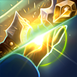
史诗Epic安度因Anduin
众生圣光Holy Light For All
快速治疗对敌人使用时造成 280 点伤害。快速治疗和神圣之星会治疗友方小兵、雇佣兵和召唤物。
沐恩除了治疗友方英雄外，还会治疗附近生命值最低的友方小兵、雇佣兵或召唤物，并对附近生命值最低的敌人造成 32 点伤害。
该伤害受公正祝福、向前推进！、恢复、附魔靴子 - 雄狮之速和心灵专注影响。Flash Heal deals 280 damage when used on enemies. Flash Heal and Divine Star heal allied Minions, Mercenaries, and Summons.
Pursued By Grace heals the lowest Health nearby allied Minion, Mercenary, or Summon and deals 32 damage to the lowest Health nearby enemy in addition to healing allied Heroes.
Damage is affected by Evenhanded Blessings, Push Forward!, Renew, Enchanted Boots - Lion's Speed, and Inner Focus.
不可叠加。 仅对 生效。Doesn't stack. Appears for only.
神圣惩击Holy Smite
绝望祈求可以对敌人使用，造成 140 点伤害并施加 狂热，持续 8 秒。
拥有 狂热 的敌人会受到相当于怀特迈恩对英雄造成伤害 100% 的伤害。
该伤害受正义怒焰、怜悯弱者、殉道之心和圣恩闪耀影响。Desperate Plea can be used on enemies to deal 140 damage and apply Zeal for 8 seconds.
Enemies with Zeal are damaged for 100% of the damage Whitemane deals to Heroes.
Damage is affected by Ardent Zeal, Pity the Frail, Martyrdom, and Radiance.
不可叠加。 仅对 生效。Doesn't stack. Appears for only.
悬浮坦克Hover Tank
获得 悬浮攻城模式。
+25% 攻城模式下的移动速度。Gain Hover Siege Mode.
+25% Movement Speed in Siege Mode.
不可叠加。 仅对 生效。Doesn't stack. Appears for only.
感染Infestation
医疗病原体可以对敌人使用并传播，在 4.5 秒内造成 222 点伤害。
生化杀伤会对受到医疗病原体影响的敌人造成 435 点伤害。
该伤害受活力摄取、超级菌株、万能携带体和强健治愈影响。Healing Pathogen can be used on and spreads to enemies, dealing 222 damage over 4.5 seconds.
Bio-Kill Switch deals 435 damage to enemies affected by Healing Pathogen.
Damage is affected by Vigorous Reuptake, Superstrain, Universal Carrier, and Top Off.
不可叠加。 仅对 生效。Doesn't stack. Appears for only.
卡莱巧思Khalai Ingenuity
折跃水晶塔和光子炮台获得无限施法距离，并瞬间完成折跃。Warp in Pylon and Photon Cannon gain unlimited cast range and warp in instantly.
不可叠加。 仅对 生效。Doesn't stack. Appears for only.

史诗Epic
战利品箱Loot Box
+2 普通恩赐，并有几率获得更高稀有度的恩赐。+2 Common Boons with a chance for higher rarity Boons.
可无限叠加。Stacks infinitely.
潜伏深渊Lurking Deep
获得 感染增生 和 它饿了。
潜伏手臂获得无限射程，感染增生不再限制引导持续时间。Gain Growing Infestation and It Hungers.
Lurking Arm gains unlimited range and Growing Infestation no longer limits the Channel duration.
不可叠加。 仅对 生效。Doesn't stack. Appears for only.
机械专家Mechanical Expert
获得 机械能手。
机械能手：
+2s 护盾持续时间
+5s 伤害持续时间Gain Mechanical Know-how.
Mechanical Know-how:
+2s Shield Duration
+5s Damage Duration
不可叠加。 仅对 生效。Doesn't stack. Appears for only.
超级治疗药水Mega Healing Potion
获得 超级治疗药水。
超级治疗药水每 2 秒强度都会继续增长，每次治疗效果提高 40%。最多可叠加至 400% 的治疗加成。
与超级治疗药水的修正值以加法叠加。
随着药水成长，其搜索半径会扩大，最大半径为 2。Gain Super Healing Potion.
Super Healing Potions continue to grow in power every 2 seconds, healing for 40% more each time. Stacks up to a maximum of 400% increased healing.
Stacks additively with Super Healing Potion's modifier.
The potion's search radius expands as the potion grows, up to a maximum radius of 2.
不可叠加。 仅对 生效。Doesn't stack. Appears for only.
月光Moonlight
月神之光会治疗初始目标附近的友方英雄。
月光会在 2.5 码范围内搜索友方。Light of Elune heals allied Heroes near the initial target.
Moonlight searches for allies in a radius of 2.5.
不可叠加。 仅对 生效。Doesn't stack. Appears for only.
需要更多法力！Need More Mana!
击杀参与恢复相当于李敏最大法力值 30% 的法力。Takedowns restore Mana equal to 30% of Li-Ming's maximum Mana.
不可叠加。 仅对 生效。Doesn't stack. Appears for only.
神经毒素光束Neurotoxin Beam
治疗射线可以对敌人使用，每秒造成 172 点伤害。
该伤害受延长护理和急救队影响。Healing Beam can be used on enemies, dealing 172 damage per second.
Damage is affected by Extended Care and First Responder.
不可叠加。 仅对 生效。Doesn't stack. Appears for only.
灵巧Nimble
+10% （每层 +10%） 对非建筑单位的闪避几率
+30% （每层 +30%） 对建筑的闪避几率
在躲避攻击或法术时不会受到伤害。+10% (+10% per stack) Dodge Chance against non-Structures.
+30% (+30% per stack) Dodge Chance against Structures.
Take no damage when dodging an attack or spell.
最多叠加 层。 生效英雄：。Stacks up to . Appears for .
潘达利亚织雾者Pandaria's Mistweaver
获得 织雾。
+1s 普通攻击和云端翔龙攻击提供的织雾冷却缩减
织雾会治疗友方小兵、雇佣兵和召唤物，并对敌人造成 149 点伤害。Gain Mistweaver.
+1s Mistweaver Cooldown Reduction from Basic Attacks and Cloud Serpent attacks.
Mistweaver heals allied Minions, Mercenaries, and Summons, and deals 149 damage to enemies.
不可叠加。 仅对 生效。Doesn't stack. Appears for only.
物理护甲Physical Armor
+15 （每层 +10） 物理护甲+15 (+10 per stack) Physical Armor
最多叠加 层。Stacks up to .
物理吸血Physical Leech
+10% （每层 +10%） 物理吸血+10% (+10% per stack) Physical Lifesteal
可无限叠加。Stacks infinitely.
穿刺飞弹Piercing Missiles
+25% 弹幕对建筑的基础伤害。+25% Missile Barrage Base Damage against Structures.
不可叠加。 仅对 生效。 需要 。Doesn't stack. Appears for only. Requires .
等离子护盾Plasma Shields
获得 护盾储能器。
+40% 护盾储能器的最大生命值护盾。
护盾储能器会作用于光子炮台与水晶塔。Gain Shield Capacitor.
+40% Maximum Health Shield for Shield Capacitor.
Shield Capacitor applies to Photon Cannons and Pylons.
不可叠加。 仅对 生效。Doesn't stack. Appears for only.
毒镖Poison Dart
治疗镖对敌人使用时造成 195 点伤害。
观瞄视界激活期间，治疗镖会穿透所有敌人。
神射手和浓缩剂量会提高该伤害。Healing Dart deals 195 damage when used on enemies.
Healing Dart pierces all enemies while Aim Down Sights is active.
Sharpshooter and Concentrated Doses increase damage.
不可叠加。 仅对 生效。Doesn't stack. Appears for only.
变形秘术Polymorphic
+0.5s 变形术持续时间
每 7 秒变形附近的一名敌人，优先选择英雄。
变形秘术会在 7 码范围内搜索敌人。+0.5s Polymorph Duration
Polymorph a nearby enemy every 7 seconds, prioritizing Heroes.
Polymorphic searches for enemies in a radius of 7.
不可叠加。 仅对 生效。Doesn't stack. Appears for only.
滋生蔓延Rampant Growth
愈合可以对友方小兵、雇佣兵和召唤物使用。
使用愈合时，还会以 50% 的持续时间对附近所有友方施加愈合。
滋生蔓延会在 3 码范围内搜索目标。
选择塞纳留斯的怨怒后，滋生蔓延也会影响敌人。Regrowth can be used on allied Minions, Mercenaries, and Summons.
When using Regrowth, it also applies Regrowth to all nearby allies for 50% normal duration.
Rampant Growth searches for targets in a radius of 3.
Rampant Growth also affects enemies when Cenarius's Spite is picked.
不可叠加。 仅对 生效。Doesn't stack. Appears for only.
风暴复苏Resurgence of the Storm
死亡后，经过 5 秒在祭坛复活。该效果有 300 （每层 -60秒） 秒冷却时间。Upon dying, revive back at your Altar after 5 seconds. This effect has a 300 (-60s per stack) second cooldown.
最多叠加 层。Stacks up to .
全体复活Resurrect All
获得 圣洁新生 和 光速。
圣洁新生获得无限射程。
对自己或友方使用圣洁新生时，会复活所有已阵亡的友方英雄。Gain Resurrect and Light Speed.
Resurrect gains unlimited range.
Casting Resurrect on yourself or on an ally resurrects all dead allied Heroes.
不可叠加。 仅对 生效。Doesn't stack. Appears for only.
惩戒Retribution
+12s 永恒先锋持续时间
圣盾术和神圣风暴可以在灵魂形态下使用。
灵魂形态下获得「黎明之光」和「愤怒之锤」，效果等同于圣光普照和制裁之锤，冷却时间为 4 秒。
永恒先锋在 8 秒后可以提前取消。
黎明之光和愤怒之锤会继承圣光普照和制裁之锤的天赋。+12s Eternal Vanguard Duration
Divine Shield and Divine Storm can be used in spirit form.
Gain Light of Dawn and Hammer of Wrath abilities while in spirit form, equivalent to Holy Radiance and Hammer of Justice with 4 second cooldowns.
Eternal Vanguard can be cancelled early after 8 seconds.
Light of Dawn and Hammer of Wrath inherit Holy Radiance and Hammer of Justice talents.
不可叠加。 仅对 生效。Doesn't stack. Appears for only.

史诗Epic卢西奥Lúcio
刺耳强音Reverse Amp
获得 刺耳强音。
刺耳强音的伤害提高至每秒 112 点，并且会对非英雄敌人造成伤害。
刺耳强音无需强音即可减速并造成伤害。强音期间，刺耳强音的伤害提高 100%，减速效果提高 20%。
刺耳强音同样会作用于立体音箱。Gain Reverse Amp.
Increases Reverse Amp's damage to 112 damage per second and it deals damage to non-Heroic enemies.
Reverse Amp Slows and deals damage without Amp It Up. During Amp It Up, Reverse Amp's damage is increased by 100% and its Slow by 20%.
Reverse Amp also applies to Boombox.
不可叠加。 仅对 生效。Doesn't stack. Appears for only.
橡胶弹Rubber Bullets
坦克模式下每 8 次对同一敌人的普通攻击使其昏迷 0.25 秒。While in Tank Mode, every 8th Basic Attack against the same enemy Stuns them for 0.25 seconds.
不可叠加。 仅对 生效。 需要 。Doesn't stack. Appears for only. Requires .
无私治疗者Selfless Healer
圣光术可以对友方小兵、雇佣兵和召唤物使用。圣光普照会治疗友方雇佣兵和召唤物。
对非英雄单位使用时，圣光术会返还 40 点法力，冷却时间缩短 6 秒。
虔诚会为友方非英雄单位提供护甲。Holy Light and can be used on allied Minions, Mercenaries, and Summons. Holy Radiance heals allied Mercenaries and Summons.
Holy Light refunds 40 Mana and its cooldown is reduced by 6 seconds when used on non-Heroes.
Devotion grants Armor to allied non-Heroes.
不可叠加。 仅对 生效。Doesn't stack. Appears for only.
法术护甲Spell Armor
+15 （每层 +10） 法术护甲+15 (+10 per stack) Spell Armor
最多叠加 层。Stacks up to .
法术吸血Spell Leech
+10% （每层 +10%） 法术吸血+10% (+10% per stack) Spell Lifesteal
可无限叠加。Stacks infinitely.
风暴护甲Storm Armor
沐浴在电能中，每秒随机电击附近一名敌人，造成 147 点伤害，优先英雄。Bathe yourself in electrical energy, shocking a random nearby enemy every second for 147 damage, prioritizing enemy Heroes.
不可叠加。 仅对 生效。Doesn't stack. Appears for only.
风暴护盾Storm Shield
+25% （每层 +25%） 最大生命值护盾
脱离战斗后，该护盾会在 5 秒内恢复。+25% (+25% per stack) Maximum Health Shield
This Shield regenerates over 5 seconds when out of combat.
可无限叠加。Stacks infinitely.
大力Strength
+25% （每层 +25%） 伤害+25% (+25% per stack) Damage
可无限叠加。Stacks infinitely.
巨龙女王The Dragon Queen
生命赐福、生命吐息、生机绽放与保护会治疗友方小兵、雇佣兵和召唤物。
生命赐福可以对敌人使用，造成相当于消耗生命值 150% 的伤害；生命吐息可以对敌人使用，造成相当于阿莱克丝塔萨当前生命值 20% 的伤害。
生机绽放对敌人造成相当于其最大生命值 20% 的伤害，保护对敌人造成相当于其最大生命值 30% 的伤害。
生生不息会提高生机绽放的伤害。Gift of Life, Breath of Life, Abundance, and Preservation heal allied Minions, Mercenaries, and Summons.
Gift of Life can be used on enemies to deal damage equal to 150% of sacrificed Health and Breath of Life can be used on enemies to deal damage equal to 20% of Alexstrasza's current Health.
Abundance deals damage to enemies equal to 20% of their maximum Health and Preservation deals damage to enemies equal to 30% of their maximum Health.
Circle of Life increases Abundance's damage.
不可叠加。 仅对 生效。Doesn't stack. Appears for only.
雷鸣猛击Thundering Smash
雷霆一击：
+1 充能次数
-4s 冷却时间
-20 法力消耗Thunder Clap:
+1 Charge
-4s Cooldown
-20 Mana Cost
不可叠加。 仅对 生效。Doesn't stack. Appears for only.
力量之触Touch of Power
对同一敌方英雄的每 第 3 次普通攻击获得 2 层巫毒祭典。Every 3rd Basic Attack against the same enemy Hero grants 2 stacks of Voodoo Ritual.
不可叠加。 仅对 生效。Doesn't stack. Appears for only.
灾厄横扫True Calamity
+25% 灾厄降临对非英雄单位的基础伤害。+25% Calamity Base Damage against non-Heroes.
不可叠加。 仅对 生效。 需要 。Doesn't stack. Appears for only. Requires .
刃出樊笼Unchained
获得 埃辛诺斯之刃。
+1 扫荡打击充能次数Gain Blades of Azzinoth.
+1 Sweeping Strike Charge
不可叠加。 仅对 生效。Doesn't stack. Appears for only.
亡灵大军Undead Army
+4 由亡者进军拔地而起的僵尸。+4 Uprooted Zombies from Dead Rush.
不可叠加。 仅对 生效。 需要 。Doesn't stack. Appears for only. Requires .
恶魔俯冲Unstoppable Dive
俯冲在持续期间提供不可阻挡状态。Dive grants Unstoppable for the duration.
不可叠加。 仅对 生效。Doesn't stack. Appears for only.
电击！ZAP!
普通攻击造成 1000% 额外伤害，并减速 90%，持续 4 秒。
每个目标有 10 秒冷却时间。Basic Attacks deal 1000% increased damage and Slow by 90% for 4 seconds.
Has a cooldown of 10 seconds per target.
不可叠加。 仅对 生效。Doesn't stack. Appears for only.
先祖诅咒Ancestral Curse
获得 先祖治疗 和 先知的赐福。
先祖治疗可以对敌方英雄使用，造成 1180 点伤害。附近的敌人会受到 590 点伤害。Gain Ancestral Healing and Farseer's Blessing.
Ancestral Healing can be used on enemy Heroes to deal 1180 damage. Enemies nearby take 590 damage.
不可叠加。 仅对 生效。Doesn't stack. Appears for only.
远古祝福Ancient Blessings
普通攻击额外造成 62 点范围伤害，并每命中一名英雄治疗 90 点生命值。
该效果每 0.5 秒最多触发一次。Basic Attacks deal an additional 62 damage in an area and heal for 90 for each Hero hit.
This effect can only occur every 0.5 seconds.
不可叠加。Doesn't stack.
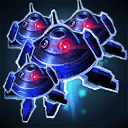
传说Legendary
伙伴大军Army of BUDDYs
+1 （每层 +1） 伙伴
AI 队友也获得属于他们的伙伴。
-15% 所有伙伴的基础伤害与治疗量。+1 (+1 per stack) BUDDY
+1 BUDDY for AI Teammates.
-15% Base Damage and Healing for all BUDDYs.
可无限叠加。 需要 。Stacks infinitely. Requires .
嗜血Bloodlust
+20% （每层 +20%） 攻击速度
+17.5% （每层 +17.5%） 移动速度
+15% （每层 +15%） 物理吸血+20% (+20% per stack) Attack Speed
+17.5% (+17.5% per stack) Movement Speed
+15% (+15% per stack) Physical Lifesteal
最多叠加 层。Stacks up to .
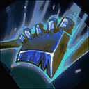
传说Legendary
劈砍Cleaver
+100% 溅射攻击伤害
普通攻击会在 2.5 码半径内溅射。
溅射不会触发任何普通攻击效果。+100% Splash Attack Damage
Basic Attacks splash in a radius of 2.5.
Splash does not trigger any Basic Attack effects.
不可叠加。 生效英雄：。Doesn't stack. Appears for .
迸发治疗Critical Healing
霜狼韧性有 50% 概率获得 1 层额外层数。Frostwolf Resilience has a 50% chance to grant 1 additional stack.
不可叠加。 仅对 生效。Doesn't stack. Appears for only.
临界炽焰Critical Mass
获得击杀参与会刷新你所有技能的冷却时间。Getting a Takedown will refresh the cooldown on all of your Abilities.
不可叠加。 对 不生效。Doesn't stack. Does not appear for .
极限威能Critical Power
获得 塔·拉夏的法理。
◆可重复任务：击杀参与可提供 1 层，并使法术强度每层提高 1.5%。
赢得游戏后保留 50% 任务进度。Gain Tal Rasha's Elements.
◆Repeatable Quest: Takedowns grant 1 stack and increase Spell Power by 1.5% per stack.
Retain 50% of Quest progress after winning the game.
不可叠加。 仅对 生效。Doesn't stack. Appears for only.
传说Legendary阿莱克丝塔萨Alexstrasza
缚亡者Death-Binder
获得 生命缚誓者 和 生命仪式。
对敌方英雄使用生命缚誓者时，会在 6 秒内造成 1440 点伤害。
生命缚誓者的生命值百分比效果不会作用于敌人。Gain Life-Binder and Ritual of Life.
Life-Binder deals 1440 damage over 6 seconds when used on enemy Heroes.
Life-Binder's Health percentage effect does not apply on enemies.
不可叠加。 仅对 生效。Doesn't stack. Appears for only.
蟾蜍之疫Diseased Toads
蟾蜍死亡时有 50% 概率召唤一只尸蛛。Toads have a 50% chance to summon a Corpse Spider on death.
不可叠加。 仅对 生效。 需要 。Doesn't stack. Appears for only. Requires .
疫病僵尸Diseased Zombies
僵尸死亡时有 50% 概率召唤一只尸蛛。Zombies have a 50% chance to summon a Corpse Spider on death.
不可叠加。 仅对 生效。 需要 。Doesn't stack. Appears for only. Requires .
梦之境界Dreamstate
获得 宁静 和 平静。
宁静：
-50 法力消耗
+3s 月火术命中敌方英雄提供的冷却缩减
宁静每秒对敌人造成 80 点伤害，并治疗友方小兵、雇佣兵和召唤物。
平静的额外治疗量也会提高该伤害。Gain Tranquility and Serenity.
Tranquility:
-50 Mana Cost
+3s Cooldown Reduction from hitting enemy Heroes with Moonfire.
Tranquility deals 80 damage per second to enemies and heals allied Minions, Mercenaries, and Summons.
Serenity's bonus healing also increases damage.
不可叠加。 仅对 生效。Doesn't stack. Appears for only.
传说Legendary光明之翼Brightwing
虚灵闪现Ethereal Blink
获得 闪烁治疗 和 看不见的朋友。
闪烁治疗：
+3 充能次数
-6s 冷却时间
-1.5s 充能之间的冷却时间
-30 法力消耗
+50% 射程
闪烁治疗会治疗友方小兵、雇佣兵和召唤物，也可以对敌人使用，造成 200 点伤害。Gain Blink Heal and Invisible Friends.
Blink Heal:
+3 Charges
-6s Cooldown
-1.5s Cooldown between Charges.
-30 Mana Cost
+50% Range
Blink Heal heals allied Minions, Mercenaries, and Summons, and can be used on enemies to deal 200 damage.
不可叠加。 仅对 生效。Doesn't stack. Appears for only.
经验储备Experience Hoarder
获胜后保留 20% 的经验值。Carry over 20% of your Experience after winning the game.
不可叠加。Doesn't stack.
爆裂掌Exploding Palm
获得 圣灵掌 和 心如止水。
对敌方英雄使用圣灵掌时，会在 4 秒内造成 1200 点伤害。
受到爆裂掌持续性伤害影响的敌方英雄死亡时会发生爆炸，对附近所有敌人造成 1200 点伤害。
爆炸效果会在 7 码范围内搜索敌人。Gain Divine Palm and Peaceful Repose.
Divine Palm deals 1200 damage over 4 seconds when used on enemy Heroes.
When an enemy Hero dies while affected by Exploding Palm's damage over time, they explode and deal 1200 damage to all nearby enemies.
Explosion effect searches for enemies in a radius of 7.
不可叠加。 仅对 生效。Doesn't stack. Appears for only.
传说Legendary重锤军士Sgt. Hammer
高爆弹Explosive Shells
+100% 坦克模式下的溅射攻击伤害。+100% Splash Attack Damage while in Tank Mode.
不可叠加。 仅对 生效。 需要 。Doesn't stack. Appears for only. Requires .
希望洪流Gamma Ray Burst
获得 充满希望。
-20 每层充满希望的最大能量消耗。
赢得游戏后，保留充满希望任务进度的 50%。Gain Reservoir of Hope.
-20 Maximum Energy per Reservoir of Hope stack.
Retain 50% of Reservoir of Hope's Quest progress after winning the game.
不可叠加。 仅对 生效。Doesn't stack. Appears for only.
伟大仪式Great Ritual
获得 剧毒感染。
+100% 任何来源的巫毒祭典礼数。Gain Vile Infection.
+100% Voodoo Ritual stacks from any source.
不可叠加。 仅对 生效。Doesn't stack. Appears for only.
传说Legendary莫拉莉斯中尉Lt. Morales
高级兴奋剂High-Grade Stimpacks
获得 激素无人机 和 肌能亢奋。
+75% 激素无人机的攻击速度加成
施放激素无人机会使莫拉莉斯中尉获得自身的激素无人机。Gain Stim Drone and Hyperactivity.
+75% Stim Drone Attack Speed bonus.
Casting Stim Drone grants Lt. Morales her own Stim Drone.
不可叠加。 仅对 生效。Doesn't stack. Appears for only.
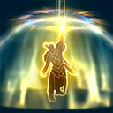
传说Legendary安度因Anduin
圣言术：圣化Holy Word: Sanctify
获得 圣言术：赎 和 暴风城之光。
-35 圣言术：赎法力消耗
圣言术：赎会治疗友方小兵、雇佣兵和召唤物，并使其获得无敌。
圣言术：赎会对敌人造成伤害，最高为其最大生命值的 30%。Gain Holy Word: Salvation and Light of Stormwind.
-35 Holy Word: Salvation Mana Cost
Holy Word: Salvation heals and grants Invulnerable to allied Minions, Mercenaries, and Summons.
Holy Word: Salvation deals damage to enemies for up to 30% of their maximum Health.
不可叠加。 仅对 生效。Doesn't stack. Appears for only.
亿杯不竭Jug of 1,000,000,000 Cups
获得 千杯不倒 和 万杯不醉。
千杯不倒：
-60 法力消耗
-1.5s 施放期间每 0.25 秒缩短的冷却时间
每 0.25 秒，千杯不倒会投出 5 瓶药水治疗友方小兵、雇佣兵和召唤物，并投出 5 瓶药水对敌人造成 75 点伤害。Gain Jug of 1,000 Cups and Jug of 1,000,000 Cups.
Jug of 1,000 Cups:
-60 Mana Cost
-1.5s Cooldown every 0.25 seconds while casting it.
Every 0.25 seconds, Jug of 1,000 Cups throws 5 brews to heal allied Minions, Mercenaries, and Summons, and 5 brews to deal 75 damage to enemies.
不可叠加。 仅对 生效。Doesn't stack. Appears for only.

传说Legendary伊利丹Illidan
何惧致盲Legally Blind
免疫致盲，且视野范围不会被降低。Gain immunity to Blind and your vision range cannot be reduced.
不可叠加。 仅对 生效。Doesn't stack. Appears for only.
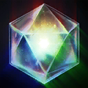
传说Legendary迪卡德Deckard
传奇宝石Legendary Gems
获得 蓝宝石、红宝石、绿宝石 和 完美宝石。
蓝宝石：+10% 减速
红宝石：+50s 次级治疗药水持续时间
绿宝石：-25% 受到的治疗量
蓝宝石、红宝石和绿宝石会同时作用于每个赫拉迪姆方块。Gain Sapphire, Ruby, Emerald, and Perfect Gems.
+10% Slow for Sapphire.
+50s Lesser Healing Potion Duration for Ruby.
-25% Healing Received for Emerald.
Sapphire, Ruby, and Emerald apply simultaneously to every Horadric Cube.
不可叠加。 仅对 生效。Doesn't stack. Appears for only.
闪电仪式Lightning Ritual
+0.3% 每层巫毒祭典礼数提供的攻击速度。
当前总计：+0% 攻击速度+0.3% Attack Speed per Voodoo Ritual stack.
Current Total: +0% Attack Speed
不可叠加。 仅对 生效。 需要 。Doesn't stack. Appears for only. Requires .- 0 层妖术祭祀时的基值；总数每层增加 0.3% 攻击速度。
- 0 层妖术祭祀时的基值；总数每层增加 0.3% 攻击速度。
月光淋漓Lunar Shower
月光术在 1.75 秒后触发第二次。Lunar Flare triggers a second time 1.75 seconds later.
不可叠加。 仅对 生效。Doesn't stack. Appears for only.
纳米激素Nano Boost
+15% （每层 +15%） 法术强度
+75% （每层 +75%） 基础技能冷却恢复速度
+2 （每层 +2） 法力回复+15% (+15% per stack) Spell Power
+75% (+75% per stack) Basic Ability Cooldown Recharge Rate
+2 (+2 per stack) Mana Regeneration
最多叠加 层。Stacks up to .
无尽尸潮Never Ending Swarm
+50% 僵尸驯养者的僵尸生成几率。
僵尸驯养者会在友方小兵上触发。+50% Zombie Spawn Chance for Zombie Handler.
Zombie Handler triggers on allied Minions.
不可叠加。 仅对 生效。 需要 。Doesn't stack. Appears for only. Requires .

传说Legendary普罗比斯Probius
脉冲星Pulsar
获得 回荡脉冲、粒子加速 和 脉冲四射。
-0.75s 回荡脉冲延迟
+1.5% 脉冲四射的最大生命值伤害
粒子加速会在每个折跃裂隙上触发。Gain Echo Pulse, Particle Accelerator, and Shoot 'Em Up.
-0.75s Echo Pulse Delay
+1.5% Shoot 'Em Up Maximum Health Damage
Particle Accelerator triggers on every Warp Rift.
不可叠加。 仅对 生效。Doesn't stack. Appears for only.
愤怒！RAGE!
获得 铜须之怒。
铜须之怒：
+200% 半径
-0.5s 伤害冷却时间Gain Bronzebeard Rage.
Bronzebeard Rage:
+200% Radius
-0.5s Damage Cooldown
不可叠加。 仅对 生效。Doesn't stack. Appears for only.
传说Legendary重锤军士Sgt. Hammer
快速致动器Rapid Actuators
获得 超级电容器。
-1.75s 攻城模式冷却时间
几乎瞬间进入攻城模式与坦克模式。Gain Ultra Capacitors.
-1.75s Siege Mode Cooldown
Enter Siege Mode and Tank Mode near instantly.
不可叠加。 仅对 生效。Doesn't stack. Appears for only.
复苏之风Second Wind
受到致命伤害时，获得 4 秒保护。
该效果有 300 秒冷却时间。On fatal damage, become Protected for 4 seconds.
This effect has a cooldown of 300 seconds.
不可叠加。Doesn't stack.
自体灌注Self Infusion
获得 纳米激素 和 纳米注入。
-40s 纳米激素冷却时间
施放纳米激素会使安娜获得自身的纳米激素。Gain Nano Boost and Nano Infusion.
-40s Nano Boost Cooldown
Casting Nano Boost grants Ana her own Nano Boost.
不可叠加。 仅对 生效。Doesn't stack. Appears for only.
暗影潜行者Shadowstalker
获得 暗影潜行 和 女猎手之眼。
-45s 暗影潜行冷却时间
暗影潜行会提供 4 秒的不可被显形效果，且友方小兵、雇佣兵和召唤物会受暗影潜行的持续治疗效果影响。
被动：脱离战斗 3 秒后获得潜行。Gain Shadowstalk and Eyes of the Huntress.
-45s Shadowstalk Cooldown
Shadowstalk grants Unrevealable for 4 seconds and allied Minions, Mercenaries, and Summons are affected by Shadowstalk's healing over time.
Passive: Gain Stealth when out of combat for 3 seconds.
不可叠加。 仅对 生效。Doesn't stack. Appears for only.
共享力量Shared Power
AI 队友的属性随难度成长。
当前属性成长：4%AI teammates's stats scale with the difficulty.
Current stats scaling: 4%
不可叠加。Doesn't stack.
神罚盾破Shield Break
获得 圣盾术 和 圣光堡垒。
圣盾术：
-40 法力消耗
-40s 冷却时间
圣盾术可以对敌方英雄使用，对护盾造成 900 点伤害，使其护甲降低 75，并减速 20%，持续 4 秒。
圣光堡垒也会对附近敌人施加神罚盾破效果。Gain Divine Shield and Bulwark of Light.
Divine Shield:
-40 Mana Cost
-40s Cooldown
Divine Shield can be used on enemy Heroes to deal 900 damage to Shields, reduce Armor by 75, and Slow by 20% for 4 seconds.
Bulwark of Light also applies Shield Break to nearby enemies.
不可叠加。 仅对 生效。Doesn't stack. Appears for only.
斯利凡Slivan
每局游戏开始时在你的队伍中召唤 永恒之母斯利凡。Summons Slivan the Eternal Mother on your Team at the start of every game.
不可叠加。Doesn't stack.
稳定圣光Stable Light
获得 引路之光。
+9 引路之光最大目标数
+15 狂热 激活时提供的护甲
引路之光现在为永久效果，死亡后不再移除。
选择神圣惩击后，引路之光可以对敌方英雄使用。Gain Guiding Light.
+9 Maximum Guiding Light targets.
+15 Armor on Zeal's activation.
Guiding Light is now permanent and will no longer be removed on death.
Guiding Light can be used on enemy Heroes when Holy Smite is picked.
不可叠加。 仅对 生效。Doesn't stack. Appears for only.
有事找手说Talk to the Hand
获得 击掌 和 混音火力。
击掌：
-70% 法力消耗
-30% 冷却时间
击掌可以对友方小兵、雇佣兵、召唤物以及非英雄敌人使用。
法力消耗和冷却缩减与混音火力的法力消耗和冷却缩减以加法叠加。Gain High Five and Mixing Fire.
High Five:
-70% Mana Cost
-30% Cooldown
High Five can be used on allied Minions, Mercenaries, Summons, and on non-Heroic enemies.
Mana cost and cooldown reduction stack additively with Mixing Fire's Mana cost and cooldown reduction.
不可叠加。 仅对 生效。Doesn't stack. Appears for only.
传说Legendary失落的维京人The Lost Vikings
三部曲！The Trilogy!
获得 续作来临。
+30% 续作来临死亡计时缩减Gain The Sequel!.
+30% The Sequel! Death Timer Reduction
不可叠加。 仅对 生效。Doesn't stack. Appears for only.
蟾蜍大师Toad Master
获得 恶疾、巨型蟾蜍 和 守卫蟾蜍。
+2 恶疾任务完成时召唤的蟾蜍
+100% 巨型蟾蜍最大伤害
+10 守卫蟾蜍护甲Gain Pandemic, Toads of Hugeness, and Guardian Toads.
+2 Summoned Toads when Pandemic's Quest is complete.
+100% Toad of Hugeness Maximum Damage
+10 Guardian Toads Armor
不可叠加。 仅对 生效。Doesn't stack. Appears for only.
猛推无阻Unstoppable Shove
获得 巨力猛推 和 愈推愈劲。
巨力猛推：
+25 护甲
+2.5s 眩晕持续时间
推击敌方英雄时变为不可阻挡。Gain Massive Shove and Push Comes to Shove.
Massive Shove:
+25 Armor
+2.5s Stun Duration
Become Unstoppable while shoving an enemy Hero.
不可叠加。 仅对 生效。Doesn't stack. Appears for only.
顽强防御Unyielding Defense
当友方堡垒或要塞被摧毁时，所有友方建筑获得 30 秒保护。
友方建筑受到的伤害不能超过其最大生命值的 10%。When an allied Fort or Keep is destroyed, ALL allied Structures become Protected for 30 seconds.
Incoming damage against allied Structures cannot exceed 10% of their maximum Health.
不可叠加。Doesn't stack.
怀特迈恩的惩罚Whitemane's Punishment
获得 血色之盾 和 血色十字军。
血色之盾会治疗友方小兵、雇佣兵和召唤物。
血色之盾会作用于敌人，造成 450 点伤害，使其护甲降低 40，持续 4 秒，并眩晕 2 秒。
选择神圣惩击后，血色之盾可以对敌人施加狂热。Gain Scarlet Aegis and Scarlet Crusade.
Scarlet Aegis heals allied Minions, Mercenaries, and Summons.
Scarlet Aegis affects enemies, dealing 450 damage, reducing their Armor by 40 for 4 seconds, and Stunning them for 2 seconds.
Scarlet Aegis can apply Zeal to enemies when Holy Smite is picked.
不可叠加。 仅对 生效。Doesn't stack. Appears for only.
新的开始A New Beginning
+1 起始恩赐+1 Starter Boon
不可叠加。Doesn't stack.
更多选项More Options
+1 选择恩赐或诅咒时的可选数量。
+2 恩赐与诅咒重掷次数。+1 Option when selecting Boons or Curses.
+2 Boon and Curse Rerolls.
不可叠加。Doesn't stack.
珍稀之运Rare Booster
出现 稀有、史诗 和 传说 恩赐的几率提高至四倍。
也影响重掷和禁用时的稀有度升级几率。Quadruples the chance to roll Rare Boons, Epic Boons, and Legendary Boons.
Also affects the chance to upgrade rarity on rerolls and bans.
不可叠加。Doesn't stack.